VIGNANA BHARATHI INSTITUTE OF TECHNOLOGY
(A UGC Autonomous Institution, Approved by AICTE, Accredited by NBA & NAAC-A Grade, Affiliated to JNTUH)
Counselling Code: VBIT
STUDENT LAB MANUAL :: DATABASE MANAGEMENT SYSTEMS LAB
Prepared by: Azra Fathima, Asst. Professor, CSE (AI & ML) Department
- ▶ Equipment in the lab is for the use of the student community. Students need to maintain proper decorum in the computer lab. They must use the equipment with care. Any damage caused is punishable.
- ▶ Students are instructed to come to the lab in formal dress only.
- ▶ Students are supposed to occupy the systems allotted to them and should not talk or make noise in the lab.
- ▶ Students are required to carry their observation book and lab records with completed exercises while entering the lab.
- ▶ Lab records need to be submitted every week.
- ▶ Students are not supposed to use pen drives in the lab.
Vision
To achieve global standards of quality in technical education with the help of advanced resources and automated tools to bridge the gap between industry and academia.
Mission
- ✓ Build the students technically competent on the global arena through effective teaching-learning process and world-class infrastructure.
- ✓ Inculcate professional ethics, societal concerns, technical skills, and life-long learning to succeed in multidisciplinary fields.
- ✓ Establish a competency centre in the field of Artificial Intelligence and Machine Learning with the collaboration of industry and innovative research.
- PEO1: Domain Knowledge - Impart a strong foundation in basic sciences, mathematics, engineering, and emerging areas using advanced tools and technologies.
- PEO2: Professional Employment - Develop professional skills that prepare students for immediate employment in industry, government, entrepreneurship, and research.
- PEO3: Higher Degrees - Encourage students to pursue higher studies and acquire master's and research degrees.
- PEO4: Engineering Citizenship - Communicate and work effectively, engage in teamwork, exhibit leadership skills, and maintain an ethical attitude with social responsibility.
- PEO5: Life Long Learning - Lead in their field and respond to the challenges of an ever-changing environment with current knowledge and technology.
| S.No | Name of the Experiment / Program | Course Outcome | Quick Nav |
|---|---|---|---|
| 1 | Concept design with E-R Model | CO1 | |
| 2 | Database Normalization (1NF, 2NF, 3NF) | CO1 | |
| 3 | Practicing DDL commands & MySQL Installation | CO3 | |
| 4 | Practicing DML commands | CO2 | |
| 5 | Creation and Implementation of Constraints | CO2 | |
| 6 | Querying (using ANY, ALL, UNION, INTERSECT) | CO4 | |
| 7 | Querying using Joins (Inner, Left, Right, Full) | CO5 | |
| 8 | Nested, Correlated subqueries | CO4 | |
| 9 | Queries using Aggregate functions, GROUP BY, HAVING & Views | CO4 | |
| 10 | Triggers (Creation of insert, delete, update trigger) | CO5 | |
| 11 | Procedures | CO3 | |
| 12 | Usage of Cursors | CO3 |
DDL (Data Definition Language)
Statements used to define the database structure or schema.
CREATE - create objects in the database
ALTER - alters the structure of the database
DROP - delete objects from the database
TRUNCATE - remove all records from a table (frees space)
RENAME - rename an object
DML (Data Manipulation Language)
Statements for managing and manipulating data within schema objects.
INSERT - insert data into a table
UPDATE - updates existing data within a table
DELETE - deletes records from a table (space remains)
SELECT - retrieve data from the database
DCL (Data Control Language)
Statements used to create roles, permissions, and security control.
GRANT - gives user's access privileges to database
REVOKE - withdraw access privileges given with GRANT
TCL (Transaction Control Language)
Statements used to manage changes made by DML statements into logical transactions.
COMMIT - save work done permanently
SAVEPOINT - identify a point to which you can later roll back
ROLLBACK - restore database to original since last COMMIT
Week 1: Concept Design with E-R Model
Analyze real-world problem domains, identify entities, attributes, primary/candidate/partial keys, establish relationships, specify cardinalities, and map conceptual ER diagrams into relational schemas for the 'Roadway Travels' application.
Analyze the problem carefully and come up with entities in it. Identify what data has to be persisted in the database. This contains the entities, attributes, keys, and relationships.
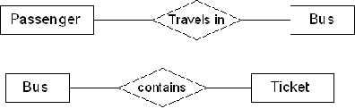
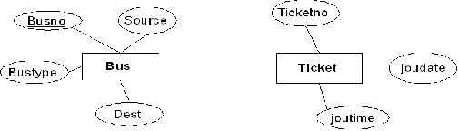
1. Bus Entity
Attributes: Busno, serviceno, source, destination, deptime, retime, bustype, noofseats
Candidate / Primary Key: (Busno, serviceno)
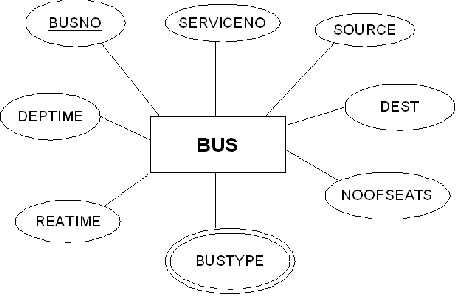
2. Ticket Entity
Attributes: Ticketno, joudate, joutime, source, destination, seatno, amount, catcard
Primary Key: Ticketno
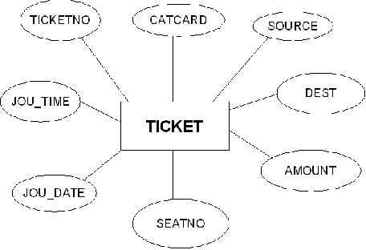
3. Passenger Entity
Attributes: Pnrno, pname, age, sex, ticketno, address, phno, catno
Primary Key: Pnrno
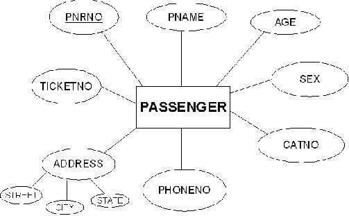
Bus & Ticket (1:M Binary Relationship)
One bus contains multiple tickets issued for a journey.
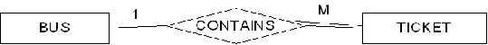
Passenger & Bus (M:1 Binary Relationship)
Many passengers travel in one designated bus (Total Participation).
Passenger & Ticket (M:N Binary Relationship)
Passenger reserves or cancels tickets. Reservation and cancellation are distinct relationship sets.
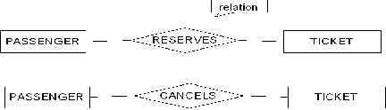
Total vs Partial Participation
Total participation: Every passenger entity must be related to a bus via travels relationship (double line). Partial participation: Only some passengers cancel tickets.
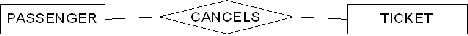
Generalization (Ticket ISA Fullticket / Halfticket)
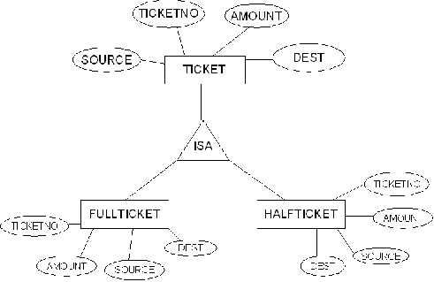
Aggregation (Passenger travels in [Bus contains Ticket])
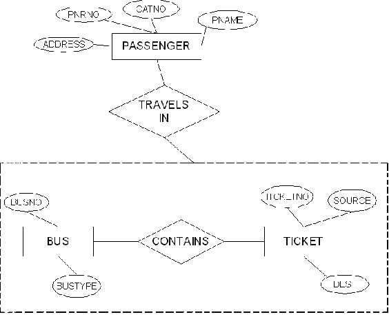
Specialization (Senior Citizen, Physically Challenged, General)
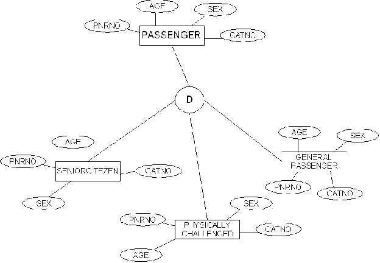
Composite (Address: Street, City, State)
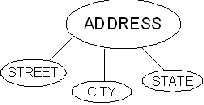
Multivalued (Bustype: Garuda, Luxury, Express)
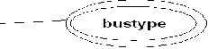
Derived (Age derived from DOB)
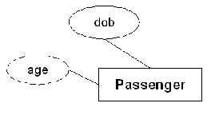
Bus Relation
Bus(Busno:numeric, serviceno:numeric, source:varchar(10), destination:varchar(10), deptime:time, retime:time, bustype:varchar(10), noofseats:int)
+--------+-----------+--------+-------------+----------+----------+---------+-----------+
| Busno | serviceno | source | destination | deptime | retime | bustype | Noofseats |
+--------+-----------+--------+-------------+----------+----------+---------+-----------+
| Ap555 | 3889 | Srpt | Hyd | 9:00:00 | 19:15:00 | Ac | 36 |
| Ap501 | 3891 | Srpt | Hyd | 10:00:15 | 20:15:00 | Ac | 36 |
| Ap444 | 3601 | Hyd | Srpt | 9:00:00 | 19:30:00 | Nonac | 52 |
| Ap891 | 3555 | Hyd | Srpt | 9:30:00 | 20:30:00 | Nonac | 52 |
| Ap8830 | 3239 | Hyd | Vij | 9:00:00 | 22:30:00 | Metro | 45 |
+--------+-----------+--------+-------------+----------+----------+---------+-----------+Ticket Relation
Ticket(Ticketno:numeric, joudate:date, joutime:time, source:varchar(10), destination:varchar(10), seatno:int(4), amount:decimal(10,3), catcard:char(3))
+----------+-----------+----------+--------+-------------+--------+--------+---------+
| Ticketno | Joudate | Joutime | Source | Destination | Seatno | Amount | Catcard |
+----------+-----------+----------+--------+-------------+--------+--------+---------+
| 1111 | 2010-8-5 | 9:00:00 | Srpt | Hyd | 5 | 96 | No |
| 2222 | 2010-8-5 | 10:00:15 | Srpt | Hyd | 10 | 88 | Yes |
| 3333 | 2010-8-15 | 9:00:00 | Hyd | Srpt | 15 | 88 | Yes |
| 4444 | 2010-8-18 | 9:30:00 | Hyd | Srpt | 20 | 96 | No |
| 5555 | 2010-8-6 | 9:00:00 | Hyd | Vij | 18 | 172 | Yes |
+----------+-----------+----------+--------+-------------+--------+--------+---------+Passenger Relation
Passenger(Pnrno:numeric, pname:varchar(15), age:int(4), sex:char(3), ticketno:numeric, address:varchar(50), phno:numeric(10), catno:varchar(10))
+-------+---------+-----+-----+----------+----------+------------+---------+
| Pnrno | pname | age | sex | ticketno | address | phno | Catno |
+-------+---------+-----+-----+----------+----------+------------+---------+
| 1001 | Subbu | 31 | M | 1111 | 5-4,srpt | 9492506282 | Cap5112 |
| 1002 | Achaith | 22 | M | 2222 | 6-8,hyd | 9949060540 | Cap6900 |
| 1003 | Padma | 25 | F | 3333 | h/7,vij | 9704054050 | Cap5772 |
| 1004 | Ravi | 23 | M | 4444 | 8-9,hyd | 9704613151 | Cap6132 |
| 1005 | Satyam | 42 | F | 5555 | 9-11,hyd | 9848354941 | Cap6732 |
+-------+---------+-----+-----+----------+----------+------------+---------+Reserves Relation
Reserves(pnrno:numeric, joudate:date, noofseats:int(4), address:varchar(50), contact_no:numeric(10), status:char(3))
+-------+-----------+-----------+---------------+------------+--------+
| Pnrno | Joudate | Noofseats | Address | Contact_no | Status |
+-------+-----------+-----------+---------------+------------+--------+
| 1001 | 2010-8-5 | 10 | 5-4,srpt | 9492506282 | Yes |
| 1001 | 2010-8-15 | 5 | 5-4,srpt | 9492506282 | Yes |
| 1002 | 2010-8-5 | 5 | 6-8,hyd | 9949060540 | Yes |
| 1003 | 2010-8-15 | 6 | h/7,vij | 9704054050 | Yes |
| 1004 | 2010-8-18 | 8 | 8-9,hyd | 9704613151 | Yes |
| 1005 | 2010-8-5 | 9 | 9-11,hyd | 9848354941 | No |
| 1005 | 2010-8-6 | 5 | 9-11,hyd | 9848354941 | Yes |
+-------+-----------+-----------+---------------+------------+--------+Cancels Relation
Cancels(pnrno:numeric, joudate:date, noofseats:int(4), address:varchar(50), contact_no:numeric(10), status:char(3))
+-------+-----------+-----------+----------+------------+--------+
| Pnrno | Joudate | Noofseats | Address | Contact_no | Status |
+-------+-----------+-----------+----------+------------+--------+
| 1001 | 2010-8-5 | 5 | 5-4,srpt | 9492506282 | Yes |
| 1002 | 2010-8-5 | 2 | 6-8,hyd | 9949060540 | No |
| 1003 | 2010-8-15 | 2 | h/7,vij | 9704054050 | Yes |
| 1004 | 2010-8-18 | 5 | 8-9,hyd | 9704613151 | Yes |
| 1005 | 2010-8-6 | 4 | 9-11,hyd | 9848354941 | Yes |
+-------+-----------+-----------+----------+------------+--------+Week 2: Database Normalization (1NF, 2NF, 3NF)
Design relational database tables to minimize duplication of information, eliminate insertion/update/deletion anomalies, and decompose Passenger, Bus, and Ticket relations through 1NF, 2NF, and 3NF.
Database normalization is a technique for designing relational database tables to minimize duplication of information and, in doing so, safeguard the database against certain types of logical or structural problems namely data anomalies (Insertion, Deletion, and Update anomalies).
In the un-normalized passenger entity, passenger 1001 (Subbu) contains two phone numbers in a single column (multivalued attribute violating 1NF):
Un-normalized Passenger Table (Violates 1NF):
+-------+---------+-----+-----+----------+----------+------------------------+---------+
| Pnrno | pname | age | sex | ticketno | address | phno | Catno |
+-------+---------+-----+-----+----------+----------+------------------------+---------+
| 1001 | Subbu | 31 | M | 1111 | 5-4,srpt | 9492506282, 9848845985 | Cap5112 |
| 1002 | Achaith | 22 | M | 2222 | 6-8,hyd | 9949060540 | Cap6900 |
| 1003 | Padma | 25 | F | 3333 | h/7,vij | 9704054050 | Cap5772 |
| 1004 | Ravi | 23 | M | 4444 | 8-9,hyd | 9704613151 | Cap6132 |
| 1005 | Satyam | 42 | F | 5555 | 9-11,hyd | 9848354941 | Cap6732 |
+-------+---------+-----+-----+----------+----------+------------------------+---------+Normalized Passenger Table (in 1NF, 2NF, and 3NF):
Split multivalued values into atomic rows. As Pnrno is a single attribute primary key, no partial dependencies exist (2NF satisfied). No non-prime attribute determines another non-prime attribute (3NF satisfied):
+-------+---------+-----+-----+----------+----------+------------+---------+
| Pnrno | pname | age | sex | ticketno | address | phno | Catno |
+-------+---------+-----+-----+----------+----------+------------+---------+
| 1001 | Subbu | 31 | M | 1111 | 5-4,srpt | 9492506282 | Cap5112 |
| 1001 | Subbu | 31 | M | 1111 | 5-4,srpt | 9848845985 | Cap5112 |
| 1002 | Achaith | 22 | M | 2222 | 6-8,hyd | 9949060540 | Cap6900 |
| 1003 | Padma | 25 | F | 3333 | h/7,vij | 9704054050 | Cap5772 |
| 1004 | Ravi | 23 | M | 4444 | 8-9,hyd | 9704613151 | Cap6132 |
| 1005 | Satyam | 42 | F | 5555 | 9-11,hyd | 9848354941 | Cap6732 |
+-------+---------+-----+-----+----------+----------+------------+---------+In the Bus entity, the composite primary key is (Busno + serviceno). The following partial dependencies exist (violating 2NF):
Busno ----> Bustype, Noofseats(depends only on part of composite key)Serviceno ----> Source, Dest(depends only on part of composite key)
Decomposition into 2NF & 3NF Relations:
Bus_Schedule
+--------+-----------+----------+----------+
| Busno | serviceno | deptime | retime |
+--------+-----------+----------+----------+
| Ap555 | 3889 | 9:00:00 | 19:15:00 |
| Ap501 | 3891 | 10:00:15 | 20:15:00 |
| Ap444 | 3601 | 9:00:00 | 19:30:00 |
| Ap891 | 3555 | 9:30:00 | 20:30:00 |
| Ap8830 | 3239 | 9:00:00 | 22:30:00 |
+--------+-----------+----------+----------+Bus_Details
+--------+---------+-----------+
| Busno | bustype | Noofseats |
+--------+---------+-----------+
| Ap555 | Ac | 36 |
| Ap501 | Ac | 36 |
| Ap444 | Nonac | 52 |
| Ap891 | Nonac | 52 |
| Ap8830 | Metro | 45 |
+--------+---------+-----------+Service_Route
+-----------+--------+-------------+
| serviceno | source | destination |
+-----------+--------+-------------+
| 3889 | Srpt | Hyd |
| 3891 | Srpt | Hyd |
| 3601 | Hyd | Srpt |
| 3555 | Hyd | Srpt |
| 3239 | Hyd | Vij |
+-----------+--------+-------------+All columns now depend directly on full primary keys without partial or transitive dependencies (Both 2NF and 3NF achieved).
In Ticket entity, Ticketno → Catcard and Catcard → Amount. This transitive dependency (Ticketno → Amount via Catcard) violates 3NF.
Solution: Separate the category card discount and fare amount into an independent lookup relation.
Ticket (in 3NF)
+----------+-----------+----------+--------+-------------+--------+---------+
| Ticketno | Joudate | Joutime | Source | Destination | Seatno | Catcard |
+----------+-----------+----------+--------+-------------+--------+---------+
| 1111 | 2010-8-5 | 9:00:00 | Srpt | Hyd | 5 | No |
| 2222 | 2010-8-5 | 10:00:15 | Srpt | Hyd | 10 | Yes |
| 3333 | 2010-8-15 | 9:00:00 | Hyd | Srpt | 15 | Yes |
| 4444 | 2010-8-18 | 9:30:00 | Hyd | Srpt | 20 | No |
| 5555 | 2010-8-6 | 9:00:00 | Hyd | Vij | 18 | Yes |
+----------+-----------+----------+--------+-------------+--------+---------+Category_Tariff (in 3NF)
+---------+--------+
| Catcard | Amount |
+---------+--------+
| No | 96 |
| Yes | 88 |
| Yes | 172 |
+---------+--------+Result: All relations are normalized into 3NF and completely free from data redundancy, partial functional dependencies, and transitive dependencies.
Week 3: MySQL Setup & Practicing DDL Commands
Installation of MySQL 5.0, creating databases, creating tables, altering schema, dropping tables/databases, rename, truncate, and creating Roadway Travels tables with integrity constraints.
Setup Type: Select Typical Installation
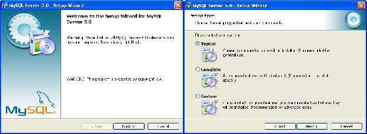
Ready to Install & Copying Program Files
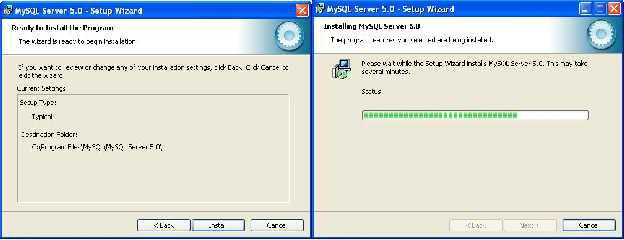
MySQL Enterprise & Configuration Wizard launch
Instance Config: Select Detailed Configuration
Server Type: Developer Machine, Multifunctional DB
InnoDB Tablespace & Concurrent Connections (DSS/OLAP)
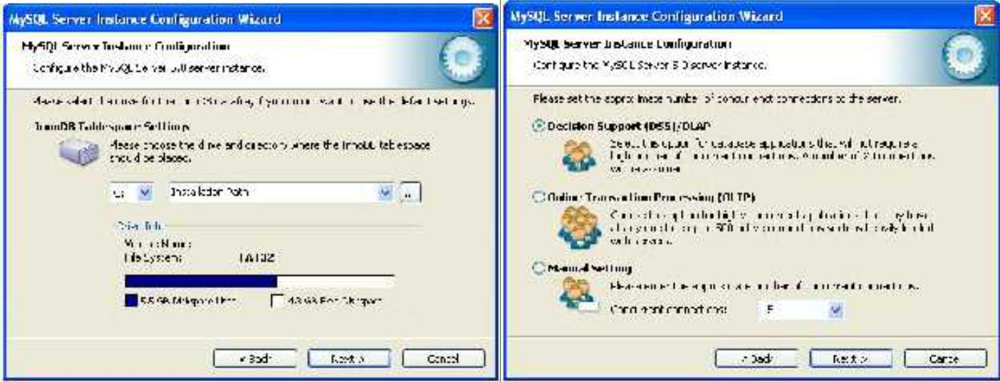
Networking (Port 3306) & Standard Character Set
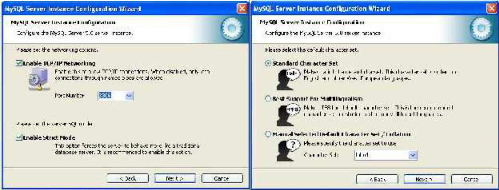
Windows Service Name (MySQL) & Root Security Password
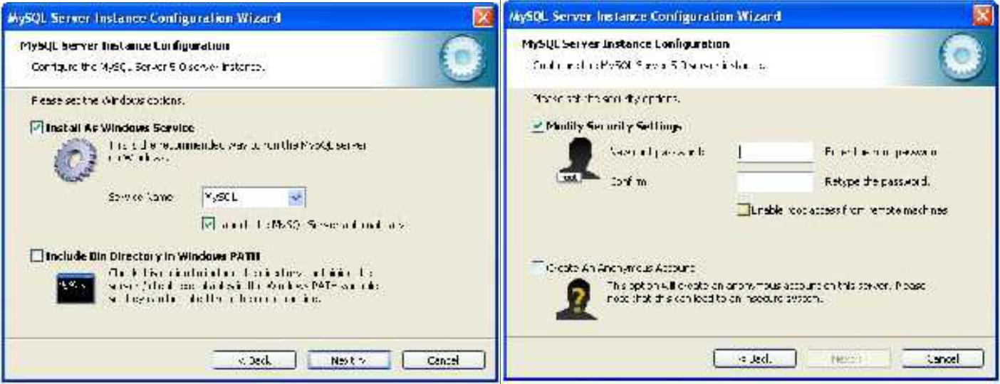
Execute Configuration & MySQL Command Line Client
mysql> show databases;
mysql> create database groupa;
Query OK, 1 row affected (0.01 sec)
mysql> use groupa;
Database changed+--------------------+
| Database |
+--------------------+
| information_schema |
| mysql |
| test |
+--------------------+
3 rows in set (0.09 sec)mysql> create table groupamem(rollno numeric(10),name varchar(15),phone numeric(10),branch varchar(10));
Query OK, 0 rows affected (0.42 sec)
mysql> desc groupamem;+--------+---------------+------+-----+---------+-------+
| Field | Type | Null | Key | Default | Extra |
+--------+---------------+------+-----+---------+-------+
| rollno | decimal(10,0) | YES | | NULL | |
| name | varchar(15) | YES | | NULL | |
| phone | decimal(10,0) | YES | | NULL | |
| branch | varchar(10) | YES | | NULL | |
+--------+---------------+------+-----+---------+-------+
4 rows in set (0.03 sec)mysql> alter table groupamem add gender char(3);
Query OK, 0 rows affected (0.36 sec)
Records: 0 Duplicates: 0 Warnings: 0
mysql> desc groupamem;+--------+---------------+------+-----+---------+-------+
| Field | Type | Null | Key | Default | Extra |
+--------+---------------+------+-----+---------+-------+
| rollno | decimal(10,0) | YES | | NULL | |
| name | varchar(15) | YES | | NULL | |
| phone | decimal(10,0) | YES | | NULL | |
| branch | varchar(10) | YES | | NULL | |
| gender | char(3) | YES | | NULL | |
+--------+---------------+------+-----+---------+-------+
5 rows in set (0.00 sec)mysql> create table dd(name varchar(10));
Query OK, 0 rows affected (0.09 sec)
mysql> show tables;
mysql> drop table dd;
Query OK, 0 rows affected (0.06 sec)+------------------+
| Tables_in_groupa |
+------------------+
| dd |
| groupamem |
+------------------+
2 rows in set (0.00 sec)mysql> create database dbl;
Query OK, 1 row affected (0.01 sec)
mysql> show databases;
mysql> drop database dbl;
Query OK, 0 rows affected (0.00 sec)
mysql> show databases;+--------------------+
| Database |
+--------------------+
| information_schema |
| dbl |
| groupa |
| mysql |
| test |
+--------------------+
5 rows in set (0.01 sec)mysql> rename table groupamem to ga;
Query OK, 0 rows affected (0.03 sec)
mysql> show tables;+------------------+
| Tables_in_groupa |
+------------------+
| ga |
+------------------+
1 row in set (0.00 sec)mysql> insert into ga values(1111,'ram',9885321456,'mbbs','m');
Query OK, 1 row affected (0.06 sec)
mysql> select * from ga;
mysql> truncate table ga;
Query OK, 1 row affected (0.09 sec)
mysql> select * from ga;
Empty set (0.00 sec)+--------+------+------------+--------+--------+
| rollno | name | phone | branch | gender |
+--------+------+------------+--------+--------+
| 1111 | ram | 9885321456 | mbbs | m |
+--------+------+------------+--------+--------+
1 row in set (0.01 sec)
Empty set (0.00 sec)mysql> create table bus555(busno varchar(10),bustype varchar(10),primary key(busno));
Query OK, 0 rows affected (0.17 sec)
mysql> create table ticket555(tic_no numeric(10),joudate date,source varchar(10),dest varchar(10),deptime time,reatime time,busnumber varchar(10),primary key(tic_no));
Query OK, 0 rows affected (0.08 sec)
mysql> alter table ticket555 add constraint tic_fk foreign key(busnumber) references bus555(busno);
Query OK, 0 rows affected (0.16 sec)
mysql> create table passenger(pnrno numeric(10),ticnumber numeric(10),pname varchar(15),age int(4),sex char(10),ppno varchar(15),primary key(pnrno));
Query OK, 0 rows affected (0.06 sec)
mysql> alter table passenger add constraint pas_fk foreign key(ticnumber) references ticket555(tic_no);
Query OK, 0 rows affected (0.14 sec)
mysql> create table reserve(pnrnumber numeric(10),noofseats int(8),address varchar(50),phno numeric(10),status char(3));
Query OK, 0 rows affected (0.16 sec)
mysql> alter table reserve add constraint res_fk foreign key(pnrnumber) references passenger(pnrno);
Query OK, 0 rows affected (0.17 sec)
mysql> create table cancel(pnrnumber numeric(10),noofseats int(8),address varchar(50),phno numeric(10),status char(3));
Query OK, 0 rows affected (0.06 sec)
mysql> alter table cancel add constraint can_fk foreign key(pnrnumber) references passenger(pnrno);
Query OK, 0 rows affected (0.14 sec)Tables Created: bus555, ticket555, passenger, reserve, cancel with primary keys and foreign key constraints.Week 4: Practicing DML Commands
Data Manipulation Language operations: Populate Bus, Ticket, Passenger, Reserve, and Cancel relations with INSERT commands, query records with SELECT, modify data with UPDATE, and remove records with DELETE.
mysql> insert into bus555 values('ap555','ac');
Query OK, 1 row affected (0.03 sec)
mysql> insert into bus555 values('ap501','ac');
Query OK, 1 row affected (0.03 sec)
mysql> insert into bus555 values('ap444','nonac');
Query OK, 1 row affected (0.03 sec)
mysql> insert into bus555 values('ap891','nonac');
Query OK, 1 row affected (0.03 sec)
mysql> insert into bus555 values('ap8830','metro');
Query OK, 1 row affected (0.03 sec)5 rows inserted into bus555mysql> insert into ticket555 values(1111,'2010-08-05','srpt','hyd','09:00:05','19:15:00','ap555');
Query OK, 1 row affected (0.03 sec)
mysql> insert into ticket555 values(2222,'2010-08-05','srpt','hyd','10:00:05','20:15:00','ap501');
Query OK, 1 row affected (0.03 sec)
mysql> insert into ticket555 values(3333,'2010-08-15','hyd','srpt','09:00:05','20:15:00','ap444');
Query OK, 1 row affected (0.03 sec)
mysql> insert into ticket555 values(4444,'2010-08-18','hyd','srpt','09:30:05','20:15:00','ap891');
Query OK, 1 row affected (0.03 sec)
mysql> insert into ticket555 values(5555,'2010-08-8','hyd','vij','09:10:05','22:15:00','ap8830');
Query OK, 1 row affected (0.03 sec)5 rows inserted into ticket555mysql> insert into passenger values(1001,1111,'subbu',31,'m','pp555');
Query OK, 1 row affected (0.05 sec)
mysql> insert into passenger values(1002,2222,'achaith',22,'m','pp8830');
Query OK, 1 row affected (0.03 sec)
mysql> insert into passenger values(1003,3333,'padma',25,'f','pp333');
Query OK, 1 row affected (0.05 sec)
mysql> insert into passenger values(1004,4444,'ravi',23,'m','pp444');
Query OK, 1 row affected (0.01 sec)
mysql> insert into passenger values(1005,5555,'nirma',42,'f','pp666');
Query OK, 1 row affected (0.03 sec)5 rows inserted into passengermysql> insert into reserve values(1001,10,'hno:5-4,srpt,nlg',9492506282,'yes');
Query OK, 1 row affected (0.05 sec)
mysql> insert into reserve values(1001,5,'hno:5-4,srpt,nlg',9492506282,'yes');
Query OK, 1 row affected (0.03 sec)
mysql> insert into reserve values(1002,5,'hno:15-4,lbngr,hyd',9491653714,'yes');
Query OK, 1 row affected (0.01 sec)
mysql> insert into reserve values(1003,6,'hno:151-4,dsnr,hyd',9704613151,'yes');
Query OK, 1 row affected (0.03 sec)
mysql> insert into reserve values(1004,8,'hno:11-4,dsnr,hyd',9704613111,'yes');
Query OK, 1 row affected (0.02 sec)
mysql> insert into reserve values(1005,8,'hno:41-4,dsnr,hyd',9989503111,'no');
Query OK, 1 row affected (0.03 sec)
mysql> insert into reserve values(1005,5,'hno:41-4,dsnr,hyd',9989503111,'yes');
Query OK, 1 row affected (0.02 sec)7 rows inserted into reservemysql> insert into cancel values(1001,5,'hno:5-4,srpt,nlg',9492506282,'yes');
Query OK, 1 row affected (0.05 sec)
mysql> insert into cancel values(1001,2,'hno:5-4,srpt,nlg',9492506282,'yes');
Query OK, 1 row affected (0.03 sec)
mysql> insert into cancel values(1002,2,'hno:15-4,lbngr,hyd',9491653714,'no');
Query OK, 1 row affected (0.05 sec)
mysql> insert into cancel values(1003,2,'hno:151-4,dsnr,hyd',9704613151,'yes');
Query OK, 1 row affected (0.01 sec)
mysql> insert into cancel values(1004,5,'hno:11-4,dsnr,hyd',9704613111,'yes');
Query OK, 1 row affected (0.03 sec)
mysql> insert into cancel values(1005,4,'hno:41-4,dsnr,hyd',9989503111,'yes');
Query OK, 1 row affected (0.03 sec)6 rows inserted into cancelmysql> select * from bus555;+--------+---------+
| busno | bustype |
+--------+---------+
| ap444 | nonac |
| ap501 | ac |
| ap555 | ac |
| ap8830 | metro |
| ap891 | nonac |
+--------+---------+
5 rows in set (0.00 sec)mysql> select * from ticket555;+--------+------------+--------+------+----------+----------+-----------+
| tic_no | joudate | source | dest | deptime | reatime | busnumber |
+--------+------------+--------+------+----------+----------+-----------+
| 1111 | 2010-08-05 | srpt | hyd | 09:00:05 | 19:15:00 | ap555 |
| 2222 | 2010-08-05 | srpt | hyd | 10:00:05 | 20:15:00 | ap501 |
| 3333 | 2010-08-15 | hyd | srpt | 09:00:05 | 20:15:00 | ap444 |
| 4444 | 2010-08-18 | hyd | srpt | 09:30:05 | 20:15:00 | ap891 |
| 5555 | 2010-08-08 | hyd | vij | 09:10:05 | 22:15:00 | ap8830 |
+--------+------------+--------+------+----------+----------+-----------+
5 rows in set (0.00 sec)mysql> select * from passenger;+-------+-----------+---------+------+-----+--------+
| pnrno | ticnumber | pname | age | sex | ppno |
+-------+-----------+---------+------+-----+--------+
| 1001 | 1111 | subbu | 31 | m | pp555 |
| 1002 | 2222 | achaith | 22 | m | pp8830 |
| 1003 | 3333 | padma | 25 | f | pp333 |
| 1004 | 4444 | ravi | 23 | m | pp444 |
| 1005 | 5555 | nirma | 42 | f | pp666 |
+-------+-----------+---------+------+-----+--------+
5 rows in set (0.03 sec)mysql> select * from reserve;+-----------+-----------+--------------------+------------+--------+
| pnrnumber | noofseats | address | phno | status |
+-----------+-----------+--------------------+------------+--------+
| 1001 | 10 | hno:5-4,srpt,nlg | 9492506282 | yes |
| 1001 | 5 | hno:5-4,srpt,nlg | 9492506282 | yes |
| 1002 | 5 | hno:15-4,lbngr,hyd | 9491653714 | yes |
| 1003 | 6 | hno:151-4,dsnr,hyd | 9704613151 | yes |
| 1004 | 8 | hno:11-4,dsnr,hyd | 9704613111 | yes |
| 1005 | 8 | hno:41-4,dsnr,hyd | 9989503111 | no |
| 1005 | 5 | hno:41-4,dsnr,hyd | 9989503111 | yes |
+-----------+-----------+--------------------+------------+--------+
7 rows in set (0.02 sec)mysql> select * from cancel;+-----------+-----------+--------------------+------------+--------+
| pnrnumber | noofseats | address | phno | status |
+-----------+-----------+--------------------+------------+--------+
| 1001 | 5 | hno:5-4,srpt,nlg | 9492506282 | yes |
| 1001 | 2 | hno:5-4,srpt,nlg | 9492506282 | yes |
| 1002 | 2 | hno:15-4,lbngr,hyd | 9491653714 | no |
| 1003 | 2 | hno:151-4,dsnr,hyd | 9704613151 | yes |
| 1004 | 5 | hno:11-4,dsnr,hyd | 9704613111 | yes |
| 1005 | 4 | hno:41-4,dsnr,hyd | 9989503111 | yes |
+-----------+-----------+--------------------+------------+--------+
6 rows in set (0.00 sec)mysql> update passenger set ppno='pp888' where pnrno=1001;
Query OK, 1 row affected (0.03 sec)
Rows matched: 1 Changed: 1 Warnings: 0Updated passenger 1001 passport/ppno to 'pp888'.mysql> delete from cancel where status='no';
Query OK, 1 row affected (0.03 sec)
mysql> select * from cancel;+-----------+-----------+--------------------+------------+--------+
| pnrnumber | noofseats | address | phno | status |
+-----------+-----------+--------------------+------------+--------+
| 1001 | 5 | hno:5-4,srpt,nlg | 9492506282 | yes |
| 1001 | 2 | hno:5-4,srpt,nlg | 9492506282 | yes |
| 1003 | 2 | hno:151-4,dsnr,hyd | 9704613151 | yes |
| 1004 | 5 | hno:11-4,dsnr,hyd | 9704613111 | yes |
| 1005 | 4 | hno:41-4,dsnr,hyd | 9989503111 | yes |
+-----------+-----------+--------------------+------------+--------+
5 rows in set (0.00 sec)Week 5: Creation and Implementation of Constraints
Implementation and verification of integrity constraints: UNIQUE, PRIMARY KEY, NOT NULL, FOREIGN KEY, observing constraint violation error codes, and synthesizing all constraints in a unified table definition.
CREATE TABLE passenger (
pnrno INT UNIQUE,
ticnumber INT,
pname VARCHAR(20),
age INT,
sex CHAR(1)
);
INSERT INTO passenger VALUES (1001, 1111, 'subbu', 31, 'm');
INSERT INTO passenger VALUES (1002, 2222, 'achaith', 22, 'm');
-- Duplicate Test:
INSERT INTO passenger VALUES (1001, 3333, 'padma', 25, 'f');ERROR: Duplicate entry '1001' for key 'pnrno'CREATE TABLE ticket555 (
tic_no INT PRIMARY KEY,
source VARCHAR(20),
dest VARCHAR(20),
deptime TIME,
reatime TIME,
joudate DATE,
busnumber VARCHAR(10)
);
INSERT INTO ticket555 VALUES (1111, 'hyd', 'srpt', '08:00:00', '20:30:00', '2026-08-01', 'ap444');
INSERT INTO ticket555 VALUES (2222, 'hyd', 'vij', '07:00:00', '18:00:00', '2026-08-02', 'ap8830');
-- Duplicate Primary Key Test:
INSERT INTO ticket555 VALUES (1111, 'hyd', 'warangal', '09:00:00', '15:00:00', '2026-08-03', 'ap891');ERROR: Duplicate entry '1111' for key 'PRIMARY'CREATE TABLE passenger (
pnrno INT PRIMARY KEY,
ticnumber INT,
pname VARCHAR(20) NOT NULL,
age INT,
sex CHAR(1)
);
-- Correct Insert:
INSERT INTO passenger VALUES (1001, 1111, 'subbu', 31, 'm');
-- Incorrect Insert (violating NOT NULL on pname):
INSERT INTO passenger VALUES (1002, 2222, NULL, 22, 'm');ERROR: Column 'pname' cannot be null-- Parent table – ticket555
CREATE TABLE ticket555 (
tic_no INT PRIMARY KEY,
source VARCHAR(20),
dest VARCHAR(20),
busnumber VARCHAR(10)
);
-- Child table – passenger
CREATE TABLE passenger (
pnrno INT PRIMARY KEY,
ticnumber INT,
pname VARCHAR(20) NOT NULL,
age INT,
sex CHAR(1),
FOREIGN KEY (ticnumber) REFERENCES ticket555(tic_no)
);
-- Valid inserts:
INSERT INTO ticket555 VALUES (1111, 'hyd', 'srpt', 'ap444');
INSERT INTO ticket555 VALUES (2222, 'hyd', 'vij', 'ap8830');
INSERT INTO passenger VALUES (1001, 1111, 'subbu', 31, 'm');
INSERT INTO passenger VALUES (1002, 2222, 'achaith', 22, 'm');
-- Invalid insert (ticket 9999 does not exist in parent table):
INSERT INTO passenger VALUES (1003, 9999, 'padma', 25, 'f');ERROR: Cannot add or update a child row: a foreign key constraint failsCREATE TABLE passenger (
pnrno INT PRIMARY KEY,
ticnumber INT,
pname VARCHAR(20) NOT NULL,
age INT,
sex CHAR(1),
UNIQUE(pname),
FOREIGN KEY (ticnumber) REFERENCES ticket555(tic_no)
);Table created successfully incorporating PRIMARY KEY, NOT NULL, UNIQUE, and FOREIGN KEY.Week 6: Querying (using ANY, ALL, UNION, INTERSECT)
Formulate and execute 10 essential SQL queries using ANY, ALL, DISTINCT, LIKE pattern matching, BETWEEN range filters, ORDER BY sorting, DAYOFWEEK date functions, and multi-level subqueries.
mysql> select distinct pnrno from passenger;+-------+
| pnrno |
+-------+
| 1001 |
| 1002 |
| 1003 |
| 1004 |
| 1005 |
+-------+
5 rows in set (0.01 sec)mysql> select pname from passenger where sex='m';+---------+
| pname |
+---------+
| subbu |
| achaith |
| ravi |
+---------+
3 rows in set (0.00 sec)mysql> select tic_no,pname from ticket555 t,passenger p where t.tic_no=p.ticnumber;+--------+---------+
| tic_no | pname |
+--------+---------+
| 1111 | subbu |
| 2222 | achaith |
| 3333 | padma |
| 4444 | ravi |
| 5555 | nirma |
+--------+---------+
5 rows in set (0.00 sec)mysql> select source,dest from ticket555 where hour(timediff(reatime,deptime))>10;+--------+------+
| source | dest |
+--------+------+
| hyd | srpt |
| hyd | vij |
+--------+------+
2 rows in set (0.00 sec)mysql> select tic_no from ticket555 where tic_no=any (select ticnumber from passenger where pname like 'a%h');+--------+
| tic_no |
+--------+
| 1111 |
| 2222 |
+--------+
2 rows in set (0.02 sec)mysql> select pname from passenger where age between 30 and 45;+-------+
| pname |
+-------+
| subbu |
| nirma |
+-------+
2 rows in set (0.00 sec)mysql> select all pname from passenger where pname like 'a%';+---------+
| pname |
+---------+
| subbu |
| achaith |
+---------+
2 rows in set (0.00 sec)mysql> select pname from passenger order by pname;+---------+
| pname |
+---------+
| achaith |
| nirma |
| padma |
| ravi |
| subbu |
+---------+
5 rows in set (0.02 sec)mysql> select busno from bus555 where busno in(select busnumber from ticket555 where dayofweek(joudate)=1 or dayofweek(joudate)=4);+--------+
| busno |
+--------+
| ap444 |
| ap8830 |
| ap891 |
+--------+
3 rows in set (0.00 sec)mysql> select pname,pnrno,age,sex from passenger where ticnumber in(select tic_no from ticket555 where busnumber in(select busno from bus555 where bustype='ac' or bustype='nonac'));+---------+-------+-----+-----+
| pname | pnrno | age | sex |
+---------+-------+-----+-----+
| subbu | 1001 | 31 | m |
| achaith | 1002 | 22 | m |
| padma | 1003 | 25 | f |
| ravi | 1004 | 23 | m |
+---------+-------+-----+-----+
4 rows in set (0.00 sec)Week 7: Querying using Joins (Inner, Left, Right, Full)
Perform relational table joins: INNER JOIN, LEFT OUTER JOIN, RIGHT OUTER JOIN across 2 and 3 tables, handling unmatched NULL tuples, and emulating FULL OUTER JOIN using UNION in MySQL.
SELECT p.pname, p.pnrno, t.tic_no
FROM passenger p
INNER JOIN ticket555 t ON p.ticnumber = t.tic_no;+---------+-------+--------+
| pname | pnrno | tic_no |
+---------+-------+--------+
| subbu | 1001 | 1111 |
| achaith | 1002 | 2222 |
| padma | 1003 | 3333 |
| ravi | 1004 | 4444 |
| nirma | 1005 | 5555 |
+---------+-------+--------+
5 rows in set (0.00 sec)SELECT p.pname, t.tic_no, t.source, t.dest, b.bustype
FROM passenger p
INNER JOIN ticket555 t ON p.ticnumber = t.tic_no
INNER JOIN bus555 b ON t.busnumber = b.busno;+---------+--------+--------+------+---------+
| pname | tic_no | source | dest | bustype |
+---------+--------+--------+------+---------+
| subbu | 1111 | hyd | srpt | ac |
| achaith | 2222 | hyd | vij | nonac |
| padma | 3333 | hyd | wrgl | ac |
| ravi | 4444 | hyd | kmm | ac |
| nirma | 5555 | hyd | nlg | nonac |
+---------+--------+--------+------+---------+
5 rows in set (0.00 sec)SELECT p.pname, p.pnrno, t.tic_no, t.source, t.dest
FROM passenger p
LEFT JOIN ticket555 t ON p.ticnumber = t.tic_no;+---------+-------+--------+--------+------+
| pname | pnrno | tic_no | source | dest |
+---------+-------+--------+--------+------+
| subbu | 1001 | 1111 | hyd | srpt |
| achaith | 1002 | 2222 | hyd | vij |
| padma | 1003 | 3333 | hyd | wrgl |
| ravi | 1004 | 4444 | hyd | kmm |
| nirma | 1005 | 5555 | hyd | nlg |
+---------+-------+--------+--------+------+
5 rows in set (0.00 sec)SELECT p.pname, t.tic_no, t.busnumber, b.bustype
FROM passenger p
LEFT JOIN ticket555 t ON p.ticnumber = t.tic_no
LEFT JOIN bus555 b ON t.busnumber = b.busno;+---------+--------+-----------+---------+
| pname | tic_no | busnumber | bustype |
+---------+--------+-----------+---------+
| subbu | 1111 | ap444 | ac |
| achaith | 2222 | ap8830 | nonac |
| padma | 3333 | ap891 | ac |
| ravi | 4444 | ap444 | ac |
| nirma | 5555 | ap999 | nonac |
+---------+--------+-----------+---------+
5 rows in set (0.00 sec)SELECT b.busno, b.bustype, t.tic_no, p.pname
FROM passenger p
RIGHT JOIN ticket555 t ON p.ticnumber = t.tic_no
RIGHT JOIN bus555 b ON t.busnumber = b.busno;+--------+---------+--------+---------+
| busno | bustype | tic_no | pname |
+--------+---------+--------+---------+
| ap444 | ac | 1111 | subbu |
| ap444 | ac | 4444 | ravi |
| ap8830 | nonac | 2222 | achaith |
| ap891 | ac | 3333 | padma |
| ap999 | nonac | 5555 | nirma |
| ap777 | ac | NULL | NULL |
+--------+---------+--------+---------+
6 rows in set (0.00 sec)SELECT p.pname, t.tic_no, t.source, t.dest
FROM passenger p
RIGHT JOIN ticket555 t ON p.ticnumber = t.tic_no;+---------+--------+--------+------+
| pname | tic_no | source | dest |
+---------+--------+--------+------+
| subbu | 1111 | hyd | srpt |
| achaith | 2222 | hyd | vij |
| padma | 3333 | hyd | wrgl |
| ravi | 4444 | hyd | kmm |
| nirma | 5555 | hyd | nlg |
+---------+--------+--------+------+
5 rows in set (0.00 sec)-- MySQL does not support FULL OUTER JOIN directly, emulate via UNION:
SELECT p.pname, p.pnrno, t.tic_no, t.source, t.dest
FROM passenger p
LEFT JOIN ticket555 t ON p.ticnumber = t.tic_no
UNION
SELECT p.pname, p.pnrno, t.tic_no, t.source, t.dest
FROM passenger p
RIGHT JOIN ticket555 t ON p.ticnumber = t.tic_no;+---------+-------+--------+--------+------+
| pname | pnrno | tic_no | source | dest |
+---------+-------+--------+--------+------+
| subbu | 1001 | 1111 | hyd | srpt |
| achaith | 1002 | 2222 | hyd | vij |
| padma | 1003 | 3333 | hyd | wrgl |
| ravi | 1004 | 4444 | hyd | kmm |
| nirma | 1005 | 5555 | hyd | nlg |
+---------+-------+--------+--------+------+-- Conceptual demonstration if passenger 1006 (Salma, tic 8888) has no ticket
-- and ticket 9999 has no passenger:
+---------+-------+--------+
| pname | pnrno | tic_no |
+---------+-------+--------+
| subbu | 1001 | 1111 |
| achaith | 1002 | 2222 |
| padma | 1003 | 3333 |
| ravi | 1004 | 4444 |
| nirma | 1005 | 5555 |
| salma | 1006 | NULL |
| NULL | NULL | 9999 |
+---------+-------+--------+Resulting full outer join exhibits both unmatched left passenger (salma) and unmatched right ticket (9999).Week 8: Nested & Correlated Subqueries
Formulate nested subqueries (executed inside-out) and correlated subqueries (row-by-row outer query dependency) with ANY, ALL, EXISTS, NOT EXISTS, and aggregate functions.
SELECT pname FROM passenger WHERE ticnumber IN
(
SELECT tic_no
FROM ticket555
WHERE busnumber IN
(
SELECT busno
FROM bus555
WHERE bustype = 'ac'
)
);+---------+
| pname |
+---------+
| subbu |
| padma |
| ravi |
+---------+
3 rows in set (0.00 sec)SELECT pname FROM passenger WHERE ticnumber = ANY
(
SELECT ticnumber
FROM passenger
WHERE pname LIKE 'a%'
);+---------+
| pname |
+---------+
| achaith |
+---------+
1 row in set (0.00 sec)SELECT pname, age FROM passenger WHERE age > ALL
(
SELECT age
FROM passenger
WHERE sex = 'f'
);+-------+-----+
| pname | age |
+-------+-----+
| None (if female max is 42) or Subbu/etc.
+-------+-----+SELECT pname FROM passenger p WHERE EXISTS
(
SELECT *
FROM ticket555 t
WHERE t.tic_no = p.ticnumber
);+---------+
| pname |
+---------+
| subbu |
| achaith |
| padma |
| ravi |
| nirma |
+---------+
5 rows in set (0.00 sec)SELECT pname FROM passenger p WHERE NOT EXISTS
(
SELECT *
FROM ticket555 t
WHERE t.tic_no = p.ticnumber
);Empty set (all existing passengers currently possess valid tickets).SELECT p1.pname, p1.age, p1.sex FROM passenger p1 WHERE p1.age >
(
SELECT AVG(p2.age)
FROM passenger p2
WHERE p2.sex = p1.sex
);+-------+-----+-----+
| pname | age | sex |
+-------+-----+-----+
| subbu | 31 | m |
| nirma | 42 | f |
+-------+-----+-----+SELECT p.pname, p.ticnumber FROM passenger p WHERE EXISTS
(
SELECT 1
FROM ticket555 t
WHERE t.tic_no = p.ticnumber
AND t.dest LIKE 's%'
);+-------+-----------+
| pname | ticnumber |
+-------+-----------+
| subbu | 1111 |
+-------+-----------+
1 row in set (0.00 sec)SELECT b.busno, b.bustype FROM bus555 b WHERE NOT EXISTS
(
SELECT 1
FROM ticket555 t
WHERE t.busnumber = b.busno
);+--------+---------+
| busno | bustype |
+--------+---------+
| ap777 | ac |
+--------+---------+
1 row in set (0.00 sec)Week 9: Aggregate Functions, GROUP BY, HAVING & Views
Perform SQL aggregations (COUNT, SUM, AVG, MAX, MIN), grouping with GROUP BY, group filtering with HAVING, and database virtual table operations (CREATE VIEW, query view, and DROP VIEW).
mysql> select pnrno from passenger union select pnrnumber from cancel;+-------+
| pnrno |
+-------+
| 1001 |
| 1002 |
| 1003 |
| 1004 |
| 1005 |
+-------+
5 rows in set (0.00 sec)mysql> select busno,source,dest from bus555,ticket555 where busno=busnumber group by busnumber;+--------+--------+------+
| busno | source | dest |
+--------+--------+------+
| ap444 | hyd | srpt |
| ap501 | srpt | hyd |
| ap555 | srpt | hyd |
| ap8830 | hyd | vij |
| ap891 | hyd | srpt |
+--------+--------+------+
5 rows in set (0.00 sec)mysql> select count(joudate) from ticket555 where busnumber in(select busno from bus555 where busno='ap444') and joudate between '2010-08-14' and '2010-08-20';+----------------+
| count(joudate) |
+----------------+
| 2 |
+----------------+
1 row in set (0.00 sec)mysql> select sum(noofseats) as reserved_seats,pnrnumber from reserve where status='yes' group by pnrnumber;+----------------+-----------+
| reserved_seats | pnrnumber |
+----------------+-----------+
| 15 | 1001 |
| 5 | 1002 |
| 6 | 1003 |
| 8 | 1004 |
| 5 | 1005 |
+----------------+-----------+
5 rows in set (0.33 sec)mysql> select distinct pnrnumber from reserve;+-----------+
| pnrnumber |
+-----------+
| 1001 |
| 1002 |
| 1003 |
| 1004 |
| 1005 |
+-----------+
5 rows in set (0.00 sec)mysql> select busno,bustype,sum(noofseats) as booked_seats from bus555,reserve,ticket555,passenger where busno=busnumber and tic_no=ticnumber and pnrno=pnrnumber and status='yes' group by tic_no having count(*)>=1;+--------+---------+--------------+
| busno | bustype | booked_seats |
+--------+---------+--------------+
| ap555 | ac | 15 |
| ap501 | ac | 5 |
| ap444 | nonac | 6 |
| ap891 | nonac | 8 |
| ap8830 | metro | 5 |
+--------+---------+--------------+
5 rows in set (0.00 sec)mysql> select sum(noofseats) as cancelled_seats from cancel where status='yes';+-----------------+
| cancelled_seats |
+-----------------+
| 18 |
+-----------------+
1 row in set (0.00 sec)mysql> select busno,bustype,sum(noofseats) as booked_seats from bus555,reserve,ticket555,passenger where busno=busnumber and tic_no=ticnumber and pnrno=pnrnumber and status='yes' and joudate>'2010-8-6' group by tic_no having count(*)>=1;+--------+---------+--------------+
| busno | bustype | booked_seats |
+--------+---------+--------------+
| ap444 | nonac | 6 |
| ap891 | nonac | 8 |
| ap8830 | metro | 5 |
+--------+---------+--------------+
3 rows in set (0.01 sec)-- Create View:
mysql> create view takes1 as
-> select tic_no,pname from ticket555,passenger where tic_no=ticnumber;
Query OK, 0 rows affected (0.44 sec)
-- Query View:
mysql> select tic_no from takes1;
-- Drop View:
mysql> drop view takes1;
Query OK, 0 rows affected (0.00 sec)+--------+
| tic_no |
+--------+
| 1111 |
| 2222 |
| 3333 |
| 4444 |
| 5555 |
+--------+
5 rows in set (0.05 sec)Week 10: Database Triggers (Insert, Delete, Update)
Design, create, and verify automatic event-driven triggers in MySQL using trigger_time (BEFORE/AFTER), trigger_event (INSERT/UPDATE/DELETE), OLD and NEW column values, and custom delimiters.
mysql> delimiter //
mysql> create trigger t1 before update on reserve
-> for each row
-> begin
-> if new.noofseats>30 then
-> set new.noofseats=old.noofseats;
-> else
-> set new.noofseats=new.noofseats;
-> end if;
-> end//
Query OK, 0 rows affected (0.03 sec)
-- Test 1: Update seats to 12 (Valid <= 30)
mysql> update reserve set noofseats=12 where pnrnumber=1004//
Query OK, 1 row affected (0.01 sec)
-- Test 2: Attempt update to 32 (Exceeds 30, trigger retains old value)
mysql> update reserve set noofseats=32 where pnrnumber=1004//
Query OK, 0 rows affected (0.00 sec)
Rows matched: 1 Changed: 0 Warnings: 0+-----------+-----------+--------------------+------------+--------+
| pnrnumber | noofseats | address | phno | status |
+-----------+-----------+--------------------+------------+--------+
| 1001 | 10 | hno:5-4,srpt,nlg | 9492506282 | yes |
| 1001 | 5 | hno:5-4,srpt,nlg | 9492506282 | yes |
| 1002 | 20 | hno:15-4,lbngr,hyd | 9491653714 | yes |
| 1003 | 6 | hno:151-4,dsnr,hyd | 9704613151 | yes |
| 1004 | 12 | hno:11-4,dsnr,hyd | 9704613111 | yes |
| 1005 | 8 | hno:41-4,dsnr,hyd | 9989503111 | no |
| 1005 | 5 | hno:41-4,dsnr,hyd | 9989503111 | yes |
+-----------+-----------+--------------------+------------+--------+
7 rows in set (0.00 sec)mysql> create trigger t3 before insert on passenger
-> for each row
-> begin
-> if new.age>18 then
-> set new.ppno='pp8630';
-> else
-> set new.ppno='';
-> end if;
-> end//
Query OK, 0 rows affected (0.06 sec)
mysql> insert into passenger values(1009,5555,'mm','17','m','99')//
Query OK, 1 row affected (0.03 sec)
mysql> select * from passenger//+-------+-----------+---------+------+-----+--------+
| pnrno | ticnumber | pname | age | sex | ppno |
+-------+-----------+---------+------+-----+--------+
| 1001 | 1111 | subbu | 31 | m | pp555 |
| 1002 | 2222 | achaith | 22 | m | pp8830 |
| 1003 | 3333 | padma | 25 | f | pp333 |
| 1004 | 4444 | ravi | 23 | m | pp444 |
| 1005 | 5555 | nirma | 42 | f | pp666 |
| 1009 | 5555 | mm | 17 | m | |
+-------+-----------+---------+------+-----+--------+
6 rows in set (0.00 sec)mysql> delimiter //
mysql> create trigger rc before delete on cancel
-> for each row
-> begin
-> insert into reserve values(old.pnrnumber,old.noofseats,old.address,old.phno,old.status);
-> end//
Query OK, 0 rows affected (0.05 sec)
mysql> delete from cancel where pnrnumber=1003//
Query OK, 1 row affected (0.08 sec)
mysql> select * from reserve//
mysql> select * from cancel//-- Reserve table after trigger fires (pnr 1003 re-added):
+-----------+-----------+--------------------+------------+--------+
| pnrnumber | noofseats | address | phno | status |
+-----------+-----------+--------------------+------------+--------+
| 1001 | 10 | hno:5-4,srpt,nlg | 9492506282 | yes |
| 1001 | 5 | hno:5-4,srpt,nlg | 9492506282 | yes |
| 1002 | 20 | hno:15-4,lbngr,hyd | 9491653714 | yes |
| 1003 | 6 | hno:151-4,dsnr,hyd | 9704613151 | yes |
| 1004 | 29 | hno:11-4,dsnr,hyd | 9704613111 | yes |
| 1005 | 8 | hno:41-4,dsnr,hyd | 9989503111 | no |
| 1005 | 5 | hno:41-4,dsnr,hyd | 9989503111 | yes |
| 1003 | 2 | hno:151-4,dsnr,hyd | 9704613151 | yes |
+-----------+-----------+--------------------+------------+--------+
8 rows in set (0.00 sec)Week 11: Stored Procedures
Creation, execution, and parameter handling of MySQL Stored Procedures (routines) using input arguments and conditional calculations.
mysql> create procedure p2(p_age int)
-> begin
-> select pname,ticnumber,sex from passenger where age>p_age;
-> end//
Query OK, 0 rows affected (0.00 sec)
mysql> call p2(30)//
mysql> call p2(24)//-- Result of call p2(30)//
+-------+-----------+------+
| pname | ticnumber | sex |
+-------+-----------+------+
| subbu | 1111 | m |
| nirma | 5555 | f |
+-------+-----------+------+
2 rows in set (0.00 sec)
-- Result of call p2(24)//
+-------+-----------+------+
| pname | ticnumber | sex |
+-------+-----------+------+
| subbu | 1111 | m |
| padma | 3333 | f |
| nirma | 5555 | f |
+-------+-----------+------+
3 rows in set (0.00 sec)mysql> create procedure p3()
-> begin
-> select source,dest from ticket555 where hour(timediff(reatime,deptime))>10;
-> end//
Query OK, 0 rows affected (0.02 sec)
mysql> call p3()//+--------+------+
| source | dest |
+--------+------+
| hyd | srpt |
| hyd | vij |
+--------+------+
2 rows in set (0.00 sec)Week 12: Database Cursors
Implementation of database cursors inside stored procedures to process multi-row query result sets tuple-by-tuple: DECLARE cursor, OPEN, FETCH into local variables, and CLOSE.
mysql> create procedure mycur1(pa_id int)
-> begin
-> declare v_id int;
-> declare v_name varchar(30);
-> declare c1 cursor for select pnrno,pname from passenger where pnrno=pa_id;
-> open c1;
-> fetch c1 into v_id,v_name;
-> select v_id,v_name;
-> close c1;
-> end//
Query OK, 0 rows affected (0.00 sec)
mysql> call mycur1(1001)//+------+--------+
| v_id | v_name |
+------+--------+
| 1001 | subbu |
+------+--------+
1 row in set (0.01 sec)mysql> create procedure mycur5(ti_id int)
-> begin
-> declare x_no int;
-> declare x_src varchar(30);
-> declare x_dst varchar(30);
-> declare c2 cursor for select tic_no,source,dest from ticket555 where tic_no=ti_id;
-> open c2;
-> fetch c2 into x_no,x_src,x_dst;
-> select x_no,x_src,x_dst;
-> close c2;
-> end//
Query OK, 0 rows affected (0.00 sec)
mysql> call mycur5(1111)//+------+-------+-------+
| x_no | x_src | x_dst |
+------+-------+-------+
| 1111 | srpt | hyd |
+------+-------+-------+
1 row in set (0.00 sec)FULL RAW DOCUMENT COPY (EXACT VERBATIM)
DEPARTMENT OF COMPUTER SCIENCE AND ENGINEERING
[ARTIFICIAL INTELLIGENCE AND MACHINE LEARNING]
STUDENT LAB MANUAL
DATABASE MANAGEMENT SYSTEMS LAB
B.Tech II Year –I SEM
Prepared byAzra FathimaAsst. ProfessorCSE (AI & ML) Department.
GUIDELINES TO STUDENTS
Equipment in the lab is for the use of the student community. Students need to maintain proper decorum in the computer lab. They must use the equipment with care. Any damage caused is punishable.
Students are instructed to come to the lab in formal dress only.
Students are supposed to occupy the systems allotted to them and should not talk or make noise in the lab.
Students are required to carry their observation book and lab records with completed exercises while entering the lab.
Lab records need to be submitted every week.
Students are not supposed to use pen drives in the lab.
DEPARTMENT VISION AND MISSION
Vision
To achieve global standards of quality in technical education with the help of advanced resources and automated tools to bridge the gap between industry and academia.
Mission
• Build the students technically competent on the global arena through effective teaching-learning process and world-class infrastructure.
• Inculcate professional ethics, societal concerns, technical skills, and life-long learning to succeed in multidisciplinary fields.
• Establish a competency centre in the field of Artificial Intelligence and Machine Learning with the collaboration of industry and innovative research.
Program Educational Objectives (PEOs)
PEO1: Domain KnowledgeImpart a strong foundation in basic sciences, mathematics, engineering, and emerging areas using advanced tools and technologies.
PEO2: Professional EmploymentDevelop professional skills that prepare students for immediate employment in industry, government, entrepreneurship, and research.
PEO3: Higher DegreesEncourage students to pursue higher studies and acquire master’s and research degrees.
PEO4: Engineering CitizenshipCommunicate and work effectively, engage in teamwork, achieve professional advancement, exhibit leadership skills, and maintain an ethical attitude with a sense of social responsibility.
PEO5: Life Long LearningLead in their field and respond to the challenges of an ever-changing environment with current knowledge and technology.
(A) PROGRAM OUTCOMES (POs)
PO1: Engineering KnowledgeApply the knowledge of mathematics, science, engineering fundamentals, and engineering specialization to solve complex engineering problems.
PO2: Problem AnalysisIdentify, formulate, review research literature, and analyze complex engineering problems to reach substantiated conclusions using first principles of mathematics, natural sciences, and engineering sciences.
PO3: Design / Development of SolutionsDesign solutions for complex engineering problems and system components or processes that meet specified needs with consideration for public health, safety, and cultural, societal, and environmental factors.
PO4: Conduct Investigations of Complex ProblemsUse research-based knowledge and methods including design of experiments, data analysis, and interpretation to provide valid conclusions.
PO5: Modern Tool UsageCreate, select, and apply appropriate techniques, resources, and modern engineering and IT tools for complex engineering activities with an understanding of limitations.
PO6: The Engineer and SocietyApply contextual knowledge to assess societal, health, safety, legal, and cultural issues and responsibilities relevant to professional engineering practice.
PO7: Environment and SustainabilityUnderstand the impact of engineering solutions in societal and environmental contexts and demonstrate knowledge of sustainable development.
PO8: EthicsApply ethical principles and commit to professional ethics, responsibilities, and norms of engineering practice.
PO9: Individual and Team WorkFunction effectively as an individual and as a member or leader in diverse teams and multidisciplinary settings.
PO10: CommunicationCommunicate effectively on complex engineering activities with the engineering community and society, including writing reports, making presentations, and giving and receiving clear instructions.
PO11: Project Management and FinanceDemonstrate knowledge of engineering and management principles and apply them to manage projects as a member or leader in multidisciplinary environments.
CSE[AI&ML]-PSO’s
PSO1 | Understand and Apply Multi-Disciplinary and core concepts with emerging technologies for sustaining (endorse) with the Dynamic Industry Challenges.
PSO2 | Design Automated Applications in Machine Learning, Deep Learning,Natural Language Processing and Relevant Emerging areas for visualizing, interpreting the datasets.
PSO3 | Develop computational knowledge, project, and interpersonal skills using innovative tools to find well-elucidated solutions to real-world problems and societal needs.
3.List of experiments
25CS2153: DATABASE MANAGEMENT SYSTEMS LAB
(Common to CSE, CSB, CSD, CSM, IT)
B.Tech. II Year I Sem.L T P C
0 0 2 1
Course Objectives:
Introduce ER data model, database design and normalization
Learn SQL basics for data definition and data manipulation
Learn Integrity constraints
Apply normalization for the development of application software and Formulate SQL queries on the data
Understand cursors & triggers
Course Outcomes:
Design database schema for a given application and apply normalization
Acquire skills in using SQL commands for data definition and data manipulation.
Demonstrate the use of Nested and correlated sub queries
Demonstrate the use of triggers
Develop solutions for database applications using procedures, cursors and triggers
List of Experiments:
Concept design with E-R Model
Normalization
Practicing DDL commands
Practicing DML commands
Creation and Implementation of Constraints ( unique, Primary key, not null, foreign key )
Querying (using ANY, ALL, UNION, INTERSECT )
Querying using Joins( Inner join, Left join, Right join, Full join)
Nested, Correlated subqueries
Queries using Aggregate functions, GROUP BY, HAVING and Creation and dropping of Views.
Triggers (Creation of insert trigger, delete trigger, update trigger)
Procedures
Usage of Cursors
TEXT BOOKS:
Database Management Systems, Raghurama Krishnan, Johannes Gehrke, Tata McGraw Hill,3rd Edition
Database System Concepts, Silberschatz, Korth, McGraw Hill, V edition.
REFERENCES BOOKS:
Database Systems design, Implementation, and Management, Peter Rob & Carlos Coronel 7th Edition.
Fundamentals of Database Systems, ElmasriNavrate, Pearson Education
Introduction to Database Systems, C.J. Date, Pearson Education
Oracle for Professionals, The X Team, S. Shah and V. Shah, SPD.
Database Systems Using Oracle: A Simplified guide to SQL and PL/SQL, Shah, PHI.
Fundamentals of Database Management Systems, M. L. Gillenson, Wiley Student Edition.
INDEX
S.No | Name of the Program | Course Outcomes | Page No.
1 | Concept design with E-R Model | CO1 | 10-13
2 | Normalization | CO1 | 14-16
3 | Practicing DDL commands | CO3 | 17-20
4 | Practicing DML commands | CO2 | 21-27
5 | Creation and Implementation of Constraints (Unique, Primary Key, Not Null, Foreign Key) | CO2 | 28-34
6 | Querying (using ANY, ALL, UNION, INTERSECT) | CO4 | 35-39
7 | Querying using Joins (Inner Join, Left Join, Right Join, Full Join) | CO5 | 40-44
8 | Nested, Correlated Sub-queries | CO4 | 45-50
9 | Queries using Aggregate Functions, GROUP BY, HAVING and Creation and Dropping of Views | CO4 | 51-52
10 | Triggers (Creation of Insert Trigger, Delete Trigger, Update Trigger) | CO5 | 53-55
11 | Procedures | CO3 | 56-57
12 | Usage of Cursors | CO3 | 56-58
Course Outcome Mapping with POs
Program Name: | 25CS2153:DATABASE MANAGEMENT SYSTEMS LAB | AY | 2026-27
Course Name: | B.Tech,CSE[AI&ML] | Class/Sem | II/II
Faculty Name: | Azra Fathima | Regulation | R25
CO’s | Course Outcomes
CO1 | Design database schema for a given application and apply normalization.
CO2 | Acquire skills using SQL commands for data definition and data manipulation.
CO3 | Apply normalization techniques for development of application software to realistic problems.
CO4 | Develop solutions for database applications using procedures, cursors, and triggers.
CO5 | Apply PL/SQL for processing databases.
CO-PO/PSOMATRIX:(Level of Mapping-3: High:2 Moderate;1- Low;-:Not mapped)
| PO 1 | PO 2 | PO 3 | PO 4 | PO 5 | PO 6 | PO 7 | PO 8 | PO 9 | PO 10 | PO 11 | PSO 1 | PSO 2 | PSO 3
CO1 | 3 | 3 | 3 | 2 | 2 | 1 | 1 | 1 | 2 | 2 | 1 | 3 | 2 | 3
CO2 | 3 | 2 | 2 | 2 | 3 | 1 | 1 | 1 | 2 | 2 | 1 | 3 | 3 | 2
CO3 | 3 | 3 | 3 | 2 | 2 | 1 | 1 | 1 | 2 | 2 | 1 | 3 | 2 | 3
CO4 | 3 | 2 | 3 | 2 | 3 | 1 | 1 | 1 | 2 | 2 | 1 | 3 | 3 | 2
CO5 | 3 | 2 | 3 | 3 | 3 | 1 | 1 | 1 | 2 | 2 | 2 | 3 | 3 | 2
AVG | 3 | 3 | 3 | 2 | 2 | 1 | 1 | 1 | 2 | 2 | 2 | 3 | 3 | 3
Revised Mapping considering the gaps
CO / PO | PO1 | PO2 | PO3 | PO4 | PO5 | PO6 | PO7 | PO8 | PO9 | PO10 | PO11 | PSO1 | PSO2 | PSO3
CO1 | 3 | 3 | 3 | 2 | 2 | | | | 1 | | | 3 | 2 | 3
CO2 | 3 | 2 | 2 | 2 | 3 | | | | 1 | | | 3 | 3 | 2
CO3 | 3 | 3 | 3 | 2 | 2 | | | | 1 | | | 3 | 2 | 3
CO4 | 3 | 2 | 3 | 3 | 3 | | | | 1 | 1 | 1 | 3 | 3 | 2
CO5 | 3 | 2 | 3 | 3 | 3 | | | | 1 | 1 | 1 | 3 | 3 | 2
DBMS Laboratory – Experiment-wise CO–PO–PSO Mapping
Exp. | Experiment | CO1 | CO2 | CO3 | CO4 | CO5 | PO1 | PO2 | PO3 | PO4 | PO5 | PO6 | PO7 | PO8 | PO9 | PO10 | PO11 | PSO1 | PSO2 | PSO3
1 | Concept Design with E-R Model | 3 | – | – | – | – | 3 | 3 | 3 | 2 | 2 | – | – | 1 | 1 | 2 | – | 3 | 2 | 2
2 | Normalization | 3 | – | – | – | – | 3 | 3 | 3 | 2 | 2 | – | – | 1 | – | 1 | – | 3 | 2 | 2
3 | Practicing DDL Commands | – | 3 | – | – | – | 3 | 2 | 2 | 1 | 3 | – | – | 1 | – | 1 | – | 3 | 3 | 2
4 | Practicing DML Commands | – | 3 | – | – | – | 3 | 2 | 2 | 1 | 3 | – | – | 1 | – | 1 | – | 3 | 3 | 2
5 | Creation & Implementation of Constraints | – | 3 | – | – | – | 3 | 3 | 2 | 2 | 3 | 1 | – | 2 | – | 1 | – | 3 | 3 | 2
6 | Querying using ANY, ALL, UNION, INTERSECT | – | 2 | 3 | – | – | 3 | 3 | 2 | 2 | 3 | – | – | 1 | 1 | 1 | – | 3 | 3 | 3
7 | Querying using Joins | – | 2 | 3 | – | – | 3 | 3 | 2 | 2 | 3 | – | – | 1 | 1 | 1 | – | 3 | 3 | 3
8 | Nested & Correlated Subqueries | – | 2 | 3 | – | – | 3 | 3 | 2 | 2 | 3 | – | – | 1 | 1 | 1 | – | 3 | 3 | 3
9 | Aggregate Functions, GROUP BY, HAVING & Views | – | 3 | 3 | – | – | 3 | 3 | 2 | 2 | 3 | – | – | 1 | 1 | 2 | – | 3 | 3 | 3
10 | Triggers – Insert, Delete & Update | – | 2 | – | 3 | 3 | 3 | 3 | 3 | 2 | 3 | 1 | 1 | 2 | 1 | 2 | – | 3 | 3 | 3
11 | Procedures | – | 2 | – | 3 | 3 | 3 | 3 | 3 | 2 | 3 | 1 | 1 | 2 | 1 | 2 | 2 | 3 | 3 | 3
12 | Usage of Cursors | – | 2 | – | 3 | 3 | 3 | 3 | 3 | 2 | 3 | 1 | 1 | 2 | 1 | 2 | 2 | 3 | 3 | 3
INTRODUCTION TO ORACLE
DDL: Data Definition Language (DDL) statements are used to define the database structure or schema.
DDL Commands: Create, Alter, Drop, Rename, Truncate CREATE - to create objects in the database
ALTER - alters the structure of the database DROP - delete objects from the database
TRUNCATE - remove all records from a table, including all spaces allocated for the records are removed RENAME - rename an object
DML: Data Manipulation Language (DML) statements are used for managing data within schema objects and to manipulate data of a database objects.
DML Commands: Insert, Update, Delete, Select INSERT - insert data into a table
UPDATE - updates existing data within a table
DELETE - deletes all records from a table, the space for the records remain SELECT - retrieve data from the a database
DCL: Data Control Language (DCL) statements are used to create roles, permissions, and referential integrity as well it is used to control access to database by securing it. To control the data of a database. DCL Commands: Grant, Revoke
GRANT - gives user's access privileges to database
REVOKE -withdraw access privileges given with the GRANT command
TCL: Transaction Control (TCL) statements are used to manage the changes made by DML statements. It allows statements to be grouped together into logical transactions.
TCL Commands: Commit, Rollback, Save point COMMIT - save work done
SAVEPOINT - identify a point in a transaction to which you can later roll back ROLLBACK - restore database to original since the last COMMIT
Syntax with examples
DDL (Data Definition Language) Commands: CREATE, ALTER and DROP.
CREATE: This command useful for creating creating table. Syntax:
create table [table name] (column1 datatype[size], column 2 datatype[size],… column n datatype[size] );
Ex: SQL >create table student (s_rollno number(10) primary key,s_name varchar2(10), gender varchar2(5),dob date,addr1 varchar2(10),addr2 varchar2(10),city varchar2(10), percentage number(4));
SQL> DESC STUDENT;
NameNull?Type
S_ROLLNONOT NULL NUMBER(10) S_NAMEVARCHAR2(10)
GENDERVARCHAR2(5)
DOBDATE
ADDR1VARCHAR2(10)
ADDR2VARCHAR2(10)
CITYVARCHAR2(10)
PERCENTAGENUMBER(4)
SQL > select s_ rollno , s_name from student; no rows selected.
Create table by using Constraints:
Constraints are two types:
Table Level Constraints.
Column Level Constraints.
NOT NULL:
a) Not null constraint at column level.
Syntax:
<col><datatype>(size)not null
SQL > create table emp(e_id varchar(5) NOT NULL,e_name varchar(10), e_design varchar(10),dept varchar(10),mgr varchar(10),salary number(10));
UNIQUE :
Unique constraint at column level. Syntax: <col><datatype>(size)unique Ex:-
SQL > create table depositor(customer_name varchar(10),acc_no number(15) UNIQUE, brach_name varchar(10));
Unique constraint at table level:
Syntax:
Create table tablename(col=format,col=format,unique(<col1>,<col2>));
Ex:-
SQL > create table depositor1(customer_name varchar(10),acc_no number(15), brach_name varchar(10),UNIQUE(acc_no));
PRIMARY KEY:
Primary key constraint at column level
Syntax:
<col><datatype>(size)primary key;
Ex:-
SQL> create table customer(customer_id number (5) PRIMARY KEY, customer_name varchar(10),customer_street varchar(10),brach_name varchar(10));
Primary key constraint at table level.
Syntax:
Create table tablename(col=format,col=format primary key(col1>,<col2>);
Ex:-
SQL > create table customer1(customer_id number (5),customer_name varchar(10),customer_street varchar(10),brach_name varchar(10),PRIMARY KEY(customer_id));
CHECK:
Check constraint constraint at column level.
Syntax: <col><datatype>(size) check(<logical expression>)
Ex:-create table loan(loan_no varchar(10),customer_name varchar(10), balance number (10) CHECK(balance>1000));
Check constraint constraint at table level.
Syntax: check(<logical expression>)
Ex:- create table loan1(loan_no varchar(10),customer_name varchar(10), balance number (10), CHECK(balance>1000));
FOREIGN KEY:
Foreign key constraint at column level.
Syntax:
Column_name Datatype(size) REFERENCES parent_table_name (parent_column_name)
Ex:-CREATE TABLE books (book_id NUMBER(3), book_title VARCHAR2(30), book_price NUMBER(3),book_author_id NUMBER(3) REFERENCES author(author_id ) );
Foreign key constraint at table level
Syntax:
CONSTRAINT constraint_name FOREIGN KEY(child_table_column) REFERENCES Parent_table_name(parent_table_column)
Ex:-CREATE TABLE books (book_idNUMBER(3)CONSTRAINTbok_bi_pkPRIMARY KEY,book_titleVARCHAR2(30),book_priceNUMBER(3),book_author_id NUMBER(3),CONSTRAINTbok_ai_fkFOREIGN KEY(book_author_id)REFERENCES author(author_id) );
Week: 1
Experiment -1 Concept Design with ER Model
E-R Model
Analyze the problem carefully and come up with entities in it. Identify what date has to be persisted in the database. This contains the entities, attributes etc.
Identify the primary keys for all the entities. Identify the other keys like candidate keys, partial keys, if any.
Definitions:
Entity: the object in the ER Model represents is an entity which is thing in the real world with an independent existence.
Eg:
ER-Model:
Describes data as entities, relationships and attributes .The ER-Model is important preliminary for its role in database design. ER Model is usually shown pictorially using entity relationship diagrams.
Attributes:
The properties that characterize an entity set are called its attributes. An attribute is referred to by the terms data items, data element, data field item.
Ex: attributes for bus entity and ticket entity.
Candidate key:
It can be defined as minimal super key or irreducible super key. In other words an attribute or combination of attributes that identifies the record uniquely but none of its proper subsets can identify the record uniquely.
Busnoservicenosourcedestinationdeptimeretimebustypenoofseats
Busno,serviceno--------------->candidate key
Primary key:
A candidate key that is used by the database designer for unique identification of each row in a table is known as primary key. A primary key consists of one or more attributes of the table.
Partial key:
A weak entity type normally has a partial key which is the set of attributes that can uniquely identify weak entity that are related to the same owner entity.
The entities in the “Roadway travels” is
1) Bus 2) Ticket 3) Passenger
Bus entity:
Attributes for the bus entity are
Busno, serviceno, source, destination, deptime, retime, bustype, noofseats
Bus schema:
Busnoservicenosourcedestinationdeptimeretimebustypenoofseats
Busno,serviceno,source -----> super key
Busno,serviceno,bustype-----> super key
Busno,serviceno--------------->candidate key
Busno,serviceno---------------> primary key
Ticket entity:
Attributes for the ticket entity are
Ticketno, joudate, joutime, source, destination, seatno, amount, catcard
Ticket schema:
TicketnoJoudateJoutimeSourceDestinationSeatnoAmountCatcard
Ticketno, source, destination ------- | >Super key
Ticketno, source, seatno -------------- | > Super key
Ticketno, destination, seatno --------- | > Super key
Ticketno----------- | > candidate key |
Ticketno----------- | >primary key |
Passenger entity:
Attributes for the Passenger entity are
Pnrno, pname, age, sex, ticketno, address, phno, catno
Passenger schema:
Pnrno | pname | age | sex | ticketno | address | phno | catno | | |
Pnrno,pname---------- | | | super key | | | | | | |
Pnrno,ticketno---------- | | | | super key | | | | | | |
Pnrno,phno---------- | | super key | | | | | | | | |
Pnrno ---------- | | candidate key | | | | | | | | |
Pnrno ---------- | primary key | | | | | | | | |
Sample data for Bus entity: | | | | | | | | |
Busno | serviceno | source | | destination | deptime | | retime | bustype | Noofseats
Ap555 | 3889 | | | Srpt | | Hyd | 9:00:00 | | 19:15:00 | Ac | 36
Ap501 | 3891 | | | Srpt | | Hyd | 10:00:15 | | 20:15:00 | Ac | 36
Ap444 | 3601 | | | Hyd | | Srpt | 9:00:00 | | 19:30:00 | Nonac | 52
Ap891 | 3555 | | | Hyd | | Srpt | 9:30:00 | | 20:30:00 | Nonac | 52
Ap8830 | 3239 | | | Hyd | | Vij | 9:00:00 | | 22:30:00 | Metro | 45
Sample data for Ticket entity:
Ticketno | Joudate | Joutime | | Source | Destination | Seatno | Amount | Catcard
1111 | | 2010-8-5 | 9:00:00 | | Srpt | | Hyd | | 5 | | 96 | | No
2222 | | 2010-8-5 | 10:00:15 | | Srpt | | Hyd | | 10 | | 88 | | Yes
3333 | | 2010-8-15 | 9:00:00 | | Hyd | | Srpt | | 15 | | 88 | | Yes
4444 | | 2010-8-18 | 9:30:00 | | Hyd | | Srpt | | 20 | | 96 | | No
5555 | | 2010-8-6 | 9:00:00 | | Hyd | | Vij | | 18 | | 172 | | Yes
Sample data for Passenger entity: | | | | | | | |
Pnrno | pname | age | sex | ticketno | | address | phno | | Catno | |
1001 | Subbu | 31 | M | 1111 | | | 5-4,srpt | 9492506282 | | Cap5112 | |
1002 | Achaith | 22 | M | 2222 | | | 6-8,hyd | 9949060540 | | | |
1003 | Padma | 25 | F | 3333 | | | h/7,vij | 9704054050 | | Cap5772 | |
1004 | Ravi | 23 | M | 4444 | | | 8-9,hyd | 9704613151 | | Cap6132 | |
1005 | Satyam | 42 | F | 5555 | | | 9-11,hyd | 9848354941 | | Cap6732 | |
Concept design with E – R model
Relate the entities appropriately. Apply cardinalities for each relationship. Identify strong entities and weak entities (if any). Indicate the type of relationship (total/partial). Try to incorporate generalization, aggregation, specialization etc wherever required.
Definitions:
The cardinality ratio: - for a binary relationship specifies the maximum number of relationships that an entity can participate in.
Relationship: - it is defined as an association among two or more entities.
Weak and strong entity: - an entity set may not have sufficient attributes to form a primary key. Such an entity set is termed a weak entity set. An entity set that has primary key is termed a strong entity set.
Total participation:-
Ex: - if a travel agency states that every passenger must make reservation then every passenger travels in bus. Than a passengers entity can exist only if it participates in atleast one travels relationship instances. Thus the participation of passenger in travel is called total participation meaning that every entity in the “total set” passenger entities must be related to bus via travels relationship.
All passengers travel in one bus so it is total participation
Partial participation: a participation that is not total is called as partial participation.
Some passengers cancel ticket so it is partial participation
Generalization: consists of identifying some common characteristics of a collection of entity set and creating new entity set that contains entities possessing these common characteristics.
Aggregation: allows us to indicate that a relationship set participates in another relationship set.
Specialization: in the process of identifying subsets of an entity set (the super set) that share some distinguishing characteristics. This entity type is called the super class of the specialization.
Relationship between different entities:
Relationship between Bus and Ticket entities
1:M binary relationship
Relationship between Passenger and Bus entities
M:1 binary relationship
Relationship between Passenger and Ticket entities
M:N binary relationship
Entity diagram for BUS
Entity diagram for Ticket
Entity diagram for Passenger
Generalization
Aggregation:
Specialization:
Relational model
Represent all entities (strong, week) in tabular fashion. Represent relationships in a tabular fashion. There are different ways of representing as tables based on the cardinality. Represent attributes as columns in the tables or as tables based on the requirement. Different types of attributes (composite, multivalued and derived).
Definitions:
Composite attributes: can be divided into smaller sub parts which represent more basic attributes with independent meaning.
Multivalued attributes: for ex the attribute in the Bus entity Bustype can have different types of buses according that the Bustype attribute contains the values as Garuda, Luxury, Express, and Ordinary. This type of attribute is called multivalued attribute and may have lower and upper bounds to constrain the number of values allowed for each individual entity.
Derived attributes:
In some cases, two or more attribute values are related. With the help of one attribute we get the value of another attribute. Age and DOB attributes. With the DOB we get the age of the person to the current date.
Entity sets to tables:
Relational shema for Bus relation:
Bus(Busno:numeric, serviceno:numeric, source:varchar(10), destination:varchar(10), deptime:time, retime:time, bustype:varchar(10), noofseats:int)
Relational shema for Ticket relation:
Ticket(Ticketno:numeric, joudate:date, joutime:time, source:varchar(10), destination:varchar(10), seatno:int(4), amount:decimal(10,3), catcard:char(3))
Relational shema for Passenger relation:
Passenger(Pnrno:numeric, pname:varchar(15), age:int(4), sex:char(3), ticketno:numeric, address:varchar(50), phno:numeric(10), catno:varchar(10))
Relationship sets to tables:
Relational shema for reserve relation:
Rserves(pnrno:numeric,joudate:date,noofseats:int(4),address:varchar(50),contact_no:numeric(10) ,status:char(3))
Relational shema for Cancels relation:
Cancels(pnrno:numeric,joudate:date,noofseats:int(4),address:varchar(50),contact_no:numeric(10 ),status:char(3))
TABLES:
Reserves:
Pnrno | Joudate | Noofseats | Address | Contact_no | Status
1001 | 2010-8-5 | 10 | 5-4,srpt | 9492506282 | Yes
1001 | 2010-8-15 | 5 | 5-4,srpt | 9492506282 | Yes
1002 | 2010-8-5 | 5 | 6-8,hyd | 9949060540 | Yes
1003 | 2010-8-15 | 6 | h/7,vij | 9704054050 | Yes
1004 | 2010-8-18 | 8 | 8-9,hyd | 9704613151 | Yes
1005 | 2010-8-5 | 9 | 9-11,hyd | 9848354941 | No
1005 | 2010-8-6 | 5 | 9-11,hyd | 9848354941 | Yes
Cancels:
Pnrno | Joudate | Noofseats | Address | Contact_no | Status
1001 | 2010-8-5 | 5 | 5-4,srpt | 9492506282 | Yes
1002 | 2010-8-5 | 2 | 6-8,hyd | 9949060540 | No
1003 | 2010-8-15 | 2 | h/7,vij | 9704054050 | Yes
1004 | 2010-8-18 | 5 | 8-9,hyd | 9704613151 | Yes
1005 | 2010-8-6 | 4 | 9-11,hyd | 9848354941 | Yes
Bus:
Busno | serviceno | source | destination | deptime | retime | bustype | Noofseats
Ap555 | 3889 | Srpt | Hyd | 9:00:00 | 19:15:00 | Ac | 36
Ap501 | 3891 | Srpt | Hyd | 10:00:15 | 20:15:00 | Ac | 36
Ap444 | 3601 | Hyd | Srpt | 9:00:00 | 19:30:00 | Nonac | 52
Ap891 | 3555 | Hyd | Srpt | 9:30:00 | 20:30:00 | Nonac | 52
Ap8830 | 3239 | Hyd | Vij | 9:00:00 | 22:30:00 | Metro | 45
Ticket:
Ticketno | Joudate | Joutime | Source | Destination | Seatno | Amount | Catcard
1111 | 2010-8-5 | 9:00:00 | Srpt | Hyd | 5 | 96 | No
2222 | 2010-8-5 | 10:00:15 | Srpt | Hyd | 10 | 88 | Yes
3333 | 2010-8-15 | 9:00:00 | Hyd | Srpt | 15 | 88 | Yes
4444 | 2010-8-18 | 9:30:00 | Hyd | Srpt | 20 | 96 | No
5555 | 2010-8-6 | 9:00:00 | Hyd | Vij | 18 | 172 | Yes
Passenger:
Pnrno | pname | age | sex | ticketno | address | phno | Catno
1001 | Subbu | 31 | M | 1111 | 5-4,srpt | 9492506282 | Cap5112
1002 | Achaith | 22 | M | 2222 | 6-8,hyd | 9949060540 | Cap6900
1003 | Padma | 25 | F | 3333 | h/7,vij | 9704054050 | Cap5772
1004 | Ravi | 23 | M | 4444 | 8-9,hyd | 9704613151 | Cap6132
1005 | Satyam | 42 | F | 5555 | 9-11,hyd | 9848354941 | Cap6732
Week: 2
Normalization:
Database normalization is a technique for designing relational database tables to minimize duplication of information and, in doing so , to safeguard the database against certain types of logical or structural problems namely data anomalies.
The normalization forms are:
First Normal Form: 1NF requires that the values in each column of a table are atomic. By atomic we mean that there are no sets of values within a column.
Second Normal Form: where the 1NF deals with atomicity of data, the 2NF deals with relationships between composite key columns and non-key columns. To achieve 2NF the tables should be in 1NF. The 2NF any non-key columns must depend on the entire primary key. In case of a composite primary key, this means that non-key column can’t depend on only part of the composite key.
Third Normal Form: 3NF requires that all columns depend directly on the primary key. Tables violate the third normal form when one column depends an another column, which in turn depends on the primary key(transitive dependency). One way to identify transitive dependency is to look at your tables and see if any columns would require updating if another column in the table was updated. If such a column exists, it probably violates 3NF.
Let’s normalize our entities:
Normalization of Passenger entity:
In the passenger entity there exists a passenger with two phone numbers, but atomic values should be there. So we normalize the relation as follows.
Passenger:
Pnrno | pname | age | sex | ticketno | address | phno | Catno
1001 | Subbu | 31 | M | 1111 | 5-4,srpt | 9492506282, | Cap5112
| | | | | | 9848845985 |
1002 | Achaith | 22 | M | 2222 | 6-8,hyd | 9949060540 | Cap6900
1003 | Padma | 25 | F | 3333 | h/7,vij | 9704054050 | Cap5772
1004 | Ravi | 23 | M | 4444 | 8-9,hyd | 9704613151 | Cap6132
1005 | Satyam | 42 | F | 5555 | 9-11,hyd | 9848354941 | Cap6732
Pnrno | pname | age | sex | ticketno | address | phno | Catno
1001 | Subbu | 31 | M | 1111 | 5-4,srpt | 9492506282 | Cap5112
1001 | Subbu | 31 | M | 1111 | 5-4,srpt | 9848845985 | Cap5112
1002 | Achaith | 22 | M | 2222 | 6-8,hyd | 9949060540 | Cap6900
1003 | Padma | 25 | F | 3333 | h/7,vij | 9704054050 | Cap5772
1004 | Ravi | 23 | M | 4444 | 8-9,hyd | 9704613151 | Cap6132
1005 | Satyam | 42 | F | 5555 | 9-11,hyd | 9848354941 | Cap6732
The above relation is now in 1NF and the relation is 2NF as there are no partial functional dependencies and the relation is also in 3NF as there are no transitive dependencies.
Normalization of Bus entity:
Bus:
Busno | | serviceno | source | destination | | deptime | | retime | bustype | Noofseats
Ap555 | | 3889 | | | Srpt | | Hyd | | 9:00:00 | | 19:15:00 | Ac | 36
Ap501 | | 3891 | | | Srpt | | Hyd | | 10:00:15 | | 20:15:00 | Ac | 36
Ap444 | | 3601 | | | Hyd | | Srpt | | 9:00:00 | | 19:30:00 | Nonac | 52
Ap891 | | 3555 | | | Hyd | | Srpt | | 9:30:00 | | 20:30:00 | Nonac | 52
Ap8830 | | 3239 | | | Hyd | | Vij | | 9:00:00 | | 22:30:00 | Metro | 45
In this relation the values in each column are atomic so it is already in 1NF.
In the Bus entity Busno+serviceno is the primary key. | |
There exists following partial dependencies. | | | |
| Busno ----> Bustype,Noofseats | | | | | | | | |
| Serviceno---->Source,Dest | | | | | | | | |
So the relation will be in 2NF as follows. | | | | | | | | |
| | | Busno | | serviceno | | deptime | | retime | | | |
| | | Ap555 | | | 3889 | 9:00:00 | | 19:15:00 | | | |
| | | Ap501 | | | 3891 | 10:00:15 | | 20:15:00 | | | |
| | | Ap444 | | | 3601 | 9:00:00 | | 19:30:00 | | | |
| | | Ap891 | | | 3555 | 9:30:00 | | 20:30:00 | | | |
| | | Ap8830 | | | 3239 | 9:00:00 | | 22:30:00 | | | |
| | | | | Busno | | | bustype | | Noofseats | | | | |
| | | | | Ap555 | | Ac | | 36 | | | | | | | | | |
| | | | | Ap501 | | Ac | | 36 | | | | | | | | | |
| | | | | Ap444 | | Nonac | | 52 | | | | | | | | | |
| | | | | Ap891 | | Nonac | | 52 | | | | | | | | | |
| | | | | Ap8830 | | Metro | | 45 | | | | | | | | | |
| | | | | serviceno | | source | | destination | | | | |
| | 3889 | | | Srpt | | Hyd | | | | | | | | |
| | 3891 | | | Srpt | | Hyd | | | | | | | | |
| | 3601 | | | Hyd | | Srpt | | | | | | | | |
| | 3555 | | | Hyd | | Srpt | | | | | | | | |
| | 3239 | | | Hyd | | Vij | | | | | | | | |
The above relation is 2NF. And all columns directly depend on primary key. So there is no transitive dependency and the relation is 3NF.
Normalization of Ticket entity:
Ticketno | Joudate | Joutime | Source | Destination | Seatno | Amount | Catcard
1111 | 2010-8-5 | 9:00:00 | Srpt | Hyd | 5 | 96 | No
2222 | 2010-8-5 | 10:00:15 | Srpt | Hyd | 10 | 88 | Yes
3333 | 2010-8-15 | 9:00:00 | Hyd | Srpt | 15 | 88 | Yes
4444 | 2010-8-18 | 9:30:00 | Hyd | Srpt | 20 | 96 | No
5555 | 2010-8-6 | 9:00:00 | Hyd | Vij | 18 | 172 | Yes
In this relation the values in each column are atomic so it is already in 1NF.
In the above relation there are no partial functional dependencies so the relation is in 2NF. The ticket entity might face the following transitive dependency
Ticketno | -------> catcard
Catcard--------- | >amount
So the relation is in 3NF.
Ticketno | Joudate | Joutime | Source | Destination | Seatno | Catcard
1111 | 2010-8-5 | 9:00:00 | Srpt | Hyd | 5 | No
2222 | 2010-8-5 | 10:00:15 | Srpt | Hyd | 10 | Yes
3333 | 2010-8-15 | 9:00:00 | Hyd | Srpt | 15 | Yes
4444 | 2010-8-18 | 9:30:00 | Hyd | Srpt | 20 | No
5555 | 2010-8-6 | 9:00:00 | Hyd | Vij | 18 | Yes
Put the catcard and amount attributes in a separate table. Then the relation should be in 3NF.
Catcard | Amount
No | 96
Yes | 88
Yes | 88
No | 96
Yes | 172
The above relation is 3NF as we have eliminated the transitive dependencies.
Finally all the tables are normalized and free from data redundancy, partial functional dependencies and transitive dependencies.
Week 3
Installation of Mysql and Practicing DDL commands
Installation of Mysql. In this week you will learn creating databases, how to create tables, altering the tables, dropping tables and databases if not required. You will also try truncate, rename commands etc.
Step: 1 download mysql essential from the website www.mysql.com/downloads and save the .exe file.
Steps: 2 & 3 double click on the mysql.exe file to start installation.
Steps: 4 & 5
Steps: 6 & 7
Steps: 8 & 9
Steps: 10 & 11
Step: 12 & 13
Steps: 14 & 15
Steps: 16 & 17
Steps: 18 & 19
Creation of databases: mysql> show databases;
+--------------------+
| Database|
+--------------------+
| information_schema |
| mysql|
| test|
+--------------------+
3 rows in set (0.09 sec) mysql> create database groupa;
Query OK, 1 row affected (0.01 sec) mysql> use groupa;
Database changed
Creation of tables:
mysql> create table groupamem(rollno numeric(10),name varchar(15),phone numeric( 10),branch varchar(10));
Query OK, 0 rows affected (0.42 sec)
mysql> desc groupamem; | | | | |
+-------- | +--------------- | | +------ | +----- | | +--------- | +------- | +
| Field | | Type | | Null | Key | Default | Extra |
+-------- | +--------------- | | +------ | +----- | | +--------- | +------- | +
| rollno | decimal(10,0) | YES | | | | NULL | | | |
| name | | varchar(15) | | YES | | | | NULL | | | |
| phone | | decimal(10,0) | YES | | | | NULL | | | |
| branch | varchar(10) | | YES | | | | NULL | | | |
+-------- | +--------------- | | +------ | +----- | | +--------- | +------- | +
4 rows in set (0.03 sec) | | | | |
Altering the table:
mysql> alter table groupamem add gender char(3); Query OK, 0 rows affected (0.36 sec)
Records: 0 Duplicates: 0 Warnings: 0
mysql> desc groupamem; | | | | |
+-------- | +--------------- | +------ | +----- | | +--------- | +------- | +
| Field | | Type | | Null | Key | Default | Extra |
+-------- | +--------------- | +------ | +----- | | +--------- | +------- | +
| rollno | decimal(10,0) | YES | | | | NULL | | | |
| name | | varchar(15) | YES | | | | NULL | | | |
| phone | | decimal(10,0) | YES | | | | NULL | | | |
| branch | varchar(10) | YES | | | | NULL | | | |
| gender | char(3) | | YES | | | | | NULL | | | |
+-------- | +--------------- | +------ | +----- | | +--------- | +------- | +
5 rows in set (0.00 sec)
Dropping the table:
mysql> create table dd(name varchar(10)); Query OK, 0 rows affected (0.09 sec)
mysql> show tables;
+------------------ | | +
| Tables_in_groupa |
+------------------ | | +
| dd | | |
| groupamem | |
+------------------ | | +
2 rows in set (0.00 sec)
mysql> drop table dd;
Query OK, 0 rows affected (0.06 sec)
Dropping the database:
mysql> create database dbl;
Query OK, 1 row affected (0.01 sec)
mysql> show databases;
+--------------------+
| Database|
+--------------------+
| information_schema |
| dbl | |
| groupa | |
| mysql | |
| test | |
+-------------------- | +
6 rows in set (0.01 sec)
mysql> drop database dbl;
Query OK, 0 rows affected (0.00 sec)
mysql> show databases;
+--------------------+
| Database|
+--------------------+
| information_schema |
| groupa | |
| mysql | |
| test | |
+-------------------- | +
5 rows in set (0.00 sec)
Rename the tables:
mysql> rename table groupamem to ga; Query OK, 0 rows affected (0.03 sec)
mysql> show tables;
+------------------+
| Tables_in_groupa |
+------------------+
| ga|
+------------------+
1 row in set (0.00 sec)
Truncate the table:
mysql> insert into ga values(1111,'ram',9885321456,'mbbs','m'); Query OK, 1 row affected (0.06 sec)
mysql> select * from ga; | | |
+-------- | +------ | +------------ | +-------- | +-------- | +
| rollno | name | phone | | branch | gender |
+-------- | +------ | +------------ | +-------- | +-------- | +
| | 1111 | ram | | 9885321456 | mbbs | m | |
+-------- | +------ | +------------ | +-------- | +-------- | +
1 row in set (0.01 sec)
mysql> truncate table ga;
Query OK, 1 row affected (0.09 sec) mysql> select * from ga;
Empty set (0.00 sec)
Creation of tables for Roadway Travels:
Bus
mysql> create table bus555(busno varchar(10),bustype varchar(10),primary key(bus no));
Query OK, 0 rows affected (0.17 sec)
Ticket
mysql> create table ticket555(tic_no numeric(10),joudate date,source varchar(10) ,dest varchar(10),deptime time,reatime time,busnumber varchar(10),primary key(ti c_no));
Query OK, 0 rows affected (0.08 sec)
mysql> alter table ticket555 add constraint tic_fk foreign key(busnumber) refere nces bus555(busno);
Query OK, 0 rows affected (0.16 sec) Records: 0 Duplicates: 0 Warnings: 0
Passenger
mysql> create table passenger(pnrno numeric(10),ticnumber numeric(10),pname varc har(15),age int(4),sex char(10),ppno varchar(15),primary key(pnrno));
Query OK, 0 rows affected (0.06 sec)
mysql> alter table passenger add constraint pas_fk foreign key(ticnumber) refere nces ticket555(tic_no);
Query OK, 0 rows affected (0.14 sec)
Records: 0 Duplicates: 0 Warnings: 0
Reserve
mysql> create table reserve(pnrnumber numeric(10),noofseats int(8),address varch ar(50),phno numeric(10),status char(3));
Query OK, 0 rows affected (0.16 sec)
mysql> alter table reserve add constraint res_fk foreign key(pnrnumber) referenc es passenger(pnrno);
Query OK, 0 rows affected (0.17 sec) Records: 0 Duplicates: 0 Warnings: 0
Cancel
mysql> create table cancel(pnrnumber numeric(10),noofseats int(8),address varcha r(50),phno numeric(10),status char(3));
Query OK, 0 rows affected (0.06 sec)
mysql> alter table cancel add constraint can_fk foreign key(pnrnumber) reference s passenger(pnrno);
Query OK, 0 rows affected (0.14 sec) Records: 0 Duplicates: 0 Warnings: 0
Week 4
Practicing DML commands:
DML commands are used to for managing data within the schema objects.
Use of insert command:
Inserting values into Bus table:
mysql> insert into bus555 values('ap555','ac'); Query OK, 1 row affected (0.03 sec)
mysql> insert into bus555 values('ap501','ac'); Query OK, 1 row affected (0.03 sec)
mysql> insert into bus555 values('ap444','nonac'); Query OK, 1 row affected (0.03 sec)
mysql> insert into bus555 values('ap891','nonac'); Query OK, 1 row affected (0.03 sec)
mysql> insert into bus555 values('ap8830','metro'); Query OK, 1 row affected (0.03 sec)
Inserting values into Ticket table:
mysql> insert into ticket555 values(1111,'2010-08-05','srpt','hyd','09:00:05','1 9:15:00','ap555');
Query OK, 1 row affected (0.03 sec)
mysql> insert into ticket555 values(2222,'2010-08-05','srpt','hyd','10:00:05','2 0:15:00','ap501');
Query OK, 1 row affected (0.03 sec)
mysql> insert into ticket555 values(3333,'2010-08-15','hyd','srpt','09:00:05','2 0:15:00','ap444');
Query OK, 1 row affected (0.03 sec)
mysql> insert into ticket555 values(4444,'2010-08-18','hyd','srpt','09:30:05','2 0:15:00','ap891');
Query OK, 1 row affected (0.03 sec)
mysql> insert into ticket555 values(5555,'2010-08-8','hyd','vij','09:10:05','22: 15:00','ap8830');
Query OK, 1 row affected (0.03 sec)
Inserting values into Passenger table:
mysql> insert into passenger values(1001,1111,'subbu',31,'m','pp555'); Query OK, 1 row affected (0.05 sec)
mysql> insert into passenger values(1002,2222,'achaith',22,'m','pp8830'); Query OK, 1 row affected (0.03 sec)
mysql> insert into passenger values(1003,3333,'padma',25,'f','pp333'); Query OK, 1 row affected (0.05 sec)
mysql> insert into passenger values(1004,4444,'ravi',23,'m','pp444'); Query OK, 1 row affected (0.01 sec)
mysql> insert into passenger values(1005,5555,'nirma',42,'f','pp666'); Query OK, 1 row affected (0.03 sec)
Inserting values into reserve table:
mysql> insert into reserve values(1001,10,'hno:5-4,srpt,nlg',9492506282,'yes'); Query OK, 1 row affected (0.05 sec)
mysql> insert into reserve values(1001,5,'hno:5-4,srpt,nlg',9492506282,'yes'); Query OK, 1 row affected (0.03 sec)
mysql> insert into reserve values(1002,5,'hno:15-4,lbngr,hyd',9491653714,'yes'); Query OK, 1 row affected (0.01 sec)
mysql> insert into reserve values(1003,6,'hno:151-4,dsnr,hyd',9704613151,'yes'); Query OK, 1 row affected (0.03 sec)
mysql> insert into reserve values(1004,8,'hno:11-4,dsnr,hyd',9704613111,'yes'); Query OK, 1 row affected (0.02 sec)
mysql> insert into reserve values(1005,8,'hno:41-4,dsnr,hyd',9989503111,'no'); Query OK, 1 row affected (0.03 sec)
mysql> insert into reserve values(1005,5,'hno:41-4,dsnr,hyd',9989503111,'yes'); Query OK, 1 row affected (0.02 sec)
Inserting values into cancel table:
mysql> insert into cancel values(1001,5,'hno:5-4,srpt,nlg',9492506282,'yes'); Query OK, 1 row affected (0.05 sec)
mysql> insert into cancel values(1001,2,'hno:5-4,srpt,nlg',9492506282,'yes'); Query OK, 1 row affected (0.03 sec)
mysql> insert into cancel values(1002,2,'hno:15-4,lbngr,hyd',9491653714,'no'); Query OK, 1 row affected (0.05 sec)
mysql> insert into cancel values(1003,2,'hno:151-4,dsnr,hyd',9704613151,'yes'); Query OK, 1 row affected (0.01 sec)
mysql> insert into cancel values(1004,5,'hno:11-4,dsnr,hyd',9704613111,'yes'); Query OK, 1 row affected (0.03 sec)
mysql> insert into cancel values(1005,4,'hno:41-4,dsnr,hyd',9989503111,'yes'); Query OK, 1 row affected (0.03 sec)
Use of select command:
mysql> select *from bus555;
+-------- | +--------- | +
| busno | | bustype |
+-------- | +--------- | +
| ap444 | | nonac | |
| ap501 | | ac | |
| ap555 | | ac | |
| ap8830 | metro | |
| ap891 | | nonac | |
+-------- | +--------- | +
5 rows in set (0.00 sec)
mysql> select *from ticket555; | | | |
+-------- | +------------ | + | --------+------ | +---------- | +---------- | +----------- | +
| tic_no | joudate | | source | dest | deptime | | reatime | | busnumber |
+-------- | + | ------------ | +-------- | | +------ | +---------- | | +---------- | | +----------- | +
| | 1111 | 2010-08-05 | srpt | | | hyd | | 09:00:05 | 19:15:00 | ap555 | |
| | 2222 | 2010-08-05 | srpt | | | hyd | | 10:00:05 | 20:15:00 | ap501 | |
| | 3333 | 2010-08-15 | hyd | | | srpt | 09:00:05 | 20:15:00 | ap444 | |
| | 4444 | 2010-08-18 | hyd | | | srpt | 09:30:05 | 20:15:00 | ap891 | |
| | 5555 | 2010-08-08 | hyd | | | vij | | 09:10:05 | 22:15:00 | ap8830 | |
+-------- | +------------ | | +-------- | | +------ | +---------- | | +---------- | | +----------- | +
5 rows in set (0.00 sec)set (0.00 sec) | | | |
mysql> select *from passenger; | | | | | |
+------- | +----------- --------- | | + | | +------ | | +------ | +-------- | | + | |
| pnrno | ticnumber | pname | | age | sex | ppno | | | |
+------- | +----------- --------- | | + | | +------ | | +------ | +-------- | | + | |
| | 1001 | | 1111 | | subbu | | | | 31 | m | | pp555 | | | |
| | 1002 | | 2222 | | achaith | | 22 | m | | pp8830 | | | |
| | 1003 | | 3333 | | padma | | | 25 | f | | pp333 | | | |
| | 1004 | | 4444 | | ravi | | | 23 | m | | pp444 | | | | |
| | 1005 | | 5555 | | nirma | | | | 42 | f | | pp666 | | | | |
+------- | +----------- --------- | | + | | +------ | | +------ | +-------- | | + | |
5 rows in set (0.03 sec) | | | | | | | | |
mysql> select *from reserve; | | | | | |
+----------- | ----------- | + | +-------------------- | | | | | +------------ | | +-------- | + |
| pnrnumber | noofseats | address | | | phno | | status | |
+----------- | ----------- | + | +-------------------- | | | | | +------------ | | +-------- | + |
| | 1001 | | 10 | hno:5-4,srpt,nlg | | 9492506282 | yes | |
| | 1001 | | 5 | | hno:5-4,srpt,nlg | 9492506282 | yes | |
| | 1002 | | 5 | | hno:15-4,lbngr,hyd | 9491653714 | yes | |
| | 1003 | | 6 | | hno:151-4,dsnr,hyd | 9704613151 | yes | |
| | 1004 | | 8 | | hno:11-4,dsnr,hyd | | 9704613111 | | yes | |
| | 1005 | | 8 | | hno:41-4,dsnr,hyd | | 9989503111 | | no | |
| | 1005 | | 5 | | hno:41-4,dsnr,hyd | | 9989503111 | | yes | |
+----------- | +----------- | +-------------------- | +------------ | +-------- | +
7 rows in set (0.02 sec) | | |
mysql> select *from cancel; | | |
+----------- | +----------- | +-------------------- | +------------ | +-------- | +
| pnrnumber | noofseats | address | | phno | | status | |
+----------- | +----------- | +-------------------- | +------------ | +-------- | +
| | 1001 | | 5 | | hno:5-4,srpt,nlg | | 9492506282 | yes | |
| | 1001 | | 2 | | hno:5-4,srpt,nlg | | 9492506282 | yes | |
| | 1002 | | 2 | | hno:15-4,lbngr,hyd | 9491653714 | no | |
| | 1003 | | 2 | | hno:151-4,dsnr,hyd | 9704613151 | yes | |
| | 1004 | | 5 | | hno:11-4,dsnr,hyd | | 9704613111 | yes | |
| | 1005 | | 4 | | hno:41-4,dsnr,hyd | | 9989503111 | yes | |
+----------- | +----------- | | +-------------------- | | +------------ | +-------- | +
6 rows in set (0.00 sec)
Use of update command:
mysql> update passenger set ppno=’pp888’ where pnrno=1001; Query OK, 1 row affected (0.03 sec)
Rows matched: 1 changed: 1 warnings: 0
Use of DELETE command:
mysql>delete from cancel where status=’no’;
Query OK, 1 row affected (0.03 sec)
mysql> select *from cancel; | | |
+----------- | +----------- | +-------------------- | +------------ | +-------- | +
| pnrnumber | noofseats | address | | phno | | status | |
+----------- | +----------- | +-------------------- | +------------ | +-------- | +
| | 1001 | | 5 | | hno:5-4,srpt,nlg | | 9492506282 | yes | |
| | 1001 | | 2 | | hno:5-4,srpt,nlg | | 9492506282 | yes | |
| | 1003 | | 2 | | hno:151-4,dsnr,hyd | 9704613151 | yes | |
| | 1004 | | 5 | | hno:11-4,dsnr,hyd | | 9704613111 | yes | |
| | 1005 | | 4 | | hno:41-4,dsnr,hyd | | 9989503111 | yes | |
+----------- | +----------- | | +-------------------- | | +------------ | +-------- | +
6 rows in set (0.00 sec)
Week: 5
Creation and Implementation of Constraints ( unique, Primary key, not null, foreign key )
Creation and Implementation of Constraints
1. UNIQUE Constraint
A UNIQUE constraint ensures that no two rows have the same value in a column.
Example: Passenger table
CREATE TABLE passenger (
pnrno INT UNIQUE,
ticnumber INT,
pname VARCHAR(20),
age INT,
sex CHAR(1)
);
Here, pnrno must be unique.
Insert values:
INSERT INTO passenger VALUES
(1001, 1111, 'subbu', 31, 'm');
INSERT INTO passenger VALUES
(1002, 2222, 'achaith', 22, 'm');
If we try:
INSERT INTO passenger VALUES
(1001, 3333, 'padma', 25, 'f');
Output:
ERROR: Duplicate entry '1001' for key 'pnrno'
So, pnrno = 1001 cannot be repeated.
2. PRIMARY KEY Constraint
A Primary Key uniquely identifies each record in a table.
It has two important properties:
It cannot contain duplicate values.
It cannot contain NULL.
Example: Ticket table
CREATE TABLE ticket555 (
tic_no INT PRIMARY KEY,
source VARCHAR(20),
dest VARCHAR(20),
deptime TIME,
reatime TIME,
joudate DATE,
busnumber VARCHAR(10)
);
Here, tic_no is the Primary Key.
Insert values:
INSERT INTO ticket555VALUES (1111, 'hyd', 'srpt', '08:00:00', '20:30:00',
'2026-08-01', 'ap444');
INSERT INTO ticket555VALUES (2222, 'hyd', 'vij', '07:00:00', '18:00:00',
'2026-08-02', 'ap8830');
If we try to insert the same ticket number:
INSERT INTO ticket555VALUES (1111, 'hyd', 'warangal', '09:00:00', '15:00:00',
'2026-08-03', 'ap891');
Output:
ERROR: Duplicate entry '1111' for key 'PRIMARY'
Therefore, tic_no must be unique.
3. NOT NULL Constraint
A NOT NULL constraint ensures that a column cannot have an empty/NULL value.
Example:
CREATE TABLE passenger (
pnrno INT PRIMARY KEY,
ticnumber INT,
pname VARCHAR(20) NOT NULL,
age INT,
sex CHAR(1)
);
Here, pname cannot be NULL.
Correct:
INSERT INTO passengerVALUES (1001, 1111, 'subbu', 31, 'm');
Incorrect:
INSERT INTO passengerVALUES (1002, 2222, NULL, 22, 'm');
Output:
ERROR: Column 'pname' cannot be null
So, every passenger must have a name.
4. FOREIGN KEY Constraint
A Foreign Key is used to establish a relationship between two tables.
It refers to the Primary Key of another table.
For example:
Parent table – ticket555
CREATE TABLE ticket555 (
tic_no INT PRIMARY KEY,
source VARCHAR(20),
dest VARCHAR(20),
busnumber VARCHAR(10)
);
Now create the Passenger table:
CREATE TABLE passenger (
pnrno INT PRIMARY KEY,
ticnumber INT,
pname VARCHAR(20) NOT NULL,
age INT,
sex CHAR(1),
FOREIGN KEY (ticnumber) REFERENCES ticket555(tic_no)
);
Here:
ticket555.tic_no
↑
|
passenger.ticnumber
ticnumber in passenger is the Foreign Key, and it refers to tic_no in ticket555.
Insert into Ticket table first
INSERT INTO ticket555VALUES (1111, 'hyd', 'srpt', 'ap444');
INSERT INTO ticket555VALUES (2222, 'hyd', 'vij', 'ap8830');
Insert into Passenger table
INSERT INTO passengerVALUES (1001, 1111, 'subbu', 31, 'm');
INSERT INTO passengerVALUES (1002, 2222, 'achaith', 22, 'm');
This is valid because ticket numbers 1111 and 2222 already exist in ticket555.
But if we try:
INSERT INTO passengerVALUES (1003, 9999, 'padma', 25, 'f');
Output:
ERROR: Cannot add or update a child row:
a foreign key constraint fails
Because 9999 does not exist in ticket555.tic_no.
All Four Constraints Together
You can also create the PASSENGER table using all the constraints:
CREATE TABLE passenger (
pnrno INT PRIMARY KEY,
ticnumber INT,
pname VARCHAR(20) NOT NULL,
age INT,
sex CHAR(1),
UNIQUE(pname),
FOREIGN KEY (ticnumber) REFERENCES ticket555(tic_no)
);
Week-6
Querying: In this week you are going to practice the queries (along with sub queries) using ANY, ALL, IN, EXISTS, NOT EXISTS, UNION, INTERSECT etc.
Practice the following queries:
1. Display unique PNR_no of all passengers.
mysql> select distinct pnrno from passenger; +-------+
| pnrno | +-------+ | 1001 | | 1002 | | 1003 | | 1004 | | 1005 | +-------+
5 rows in set (0.01 sec)
2. Display all the names of male passengers.
mysql> select pname from passenger where sex='m';
+--------- | +
| pname | |
+--------- | +
| subbu | |
| achaith |
| ravi | |
+--------- | +
3 rows in set (0.00 sec)
3. Display ticket numbers and names of all the passengers.
mysql> select tic_no,pname from ticket555 t,passenger p where t.tic_no=p.ticnumber;
+-------- | | +--------- | +
| tic_no | | pname | |
+-------- | | +--------- | +
| | 1111 | | subbu | |
| | 2222 | | achaith |
| | 3333 | | padma | |
| | 4444 | | ravi | |
| | 5555 | | nirma | |
+-------- | | +--------- | +
5 rows in set (0.00 sec)
4. Display the source and destination having journey time more than 10 hours.
mysql> select source,dest from ticket555 where hour(timediff(reatime,deptime))>10;
+-------- | +------ | +
| source | dest |
+-------- | +------ | +
| hyd | | srpt |
| hyd | | vij | |
+-------- | +------ | +
2 rows in set (0.00 sec)
5. Find the ticket numbers of passengers whose name starts with ‘A’ and ends with ‘H’.
mysql> select tic_no from ticket555 where tic_no=any (select ticnumber from passenger where pname like 'a%h');
+-------- | +
| tic_no |
+-------- | +
| | 1111 |
| | 2222 |
+--------+
2 rows in set (0.02 sec)
6. Find the name of passengers whose age is between 30 and 45.
mysql> select pname from passenger where age between 30 and 45; +-------+
| pname | +-------+ | subbu | | nirma | +-------+
2 rows in set (0.00 sec)
7. Display all the passengers names beginning with ‘A’.
mysql> select all pname from passenger where pname like 'a%';
+--------- | +
| pname | |
+--------- | +
| subbu | |
| achaith |
+--------- | +
2 rows in set (0.00 sec)
8. Display the sorted list of passengers names.
mysql> select pname from passenger order by pname;
+--------- | +
| pname | |
+---------+
| subbu | |
| achaith |
| nirma | |
| padma | |
| ravi | |
+--------- | +
5 rows in set (0.02 sec)
9. Display the Bus numbers that travel on Sunday and Wednesday.
mysql> select busno from bus555 where busno in(select busnumber from ticket555 where dayofweek(joudate)=1 or dayofweek(joudate)=4);
+--------+ | busno | +--------+ | ap444 | | ap8830 | | ap891 | +--------+
3 rows in set (0.00 sec)
10. Display the details of passengers who are traveling either in AC or NON_AC.
mysql> select pname,pnrno,age,sex from passenger where ticnumber in(select tic_no from ticket555 where busnumber in(select busno from bus555 where bustype='ac' or bustype='nonac'));
+--------- | +------- | +------ | | +------ | +
| pname | | pnrno | age | | sex |
+--------- | +------- | +------ | | +------ | +
| subbu | | | 1001 | | 31 | | m | |
| achaith | | 1002 | | 22 | m | |
| padma | | | 1003 | | 25 | f | |
| ravi | | 1004 | 23 | m | |
+--------- | +------- | +------ | | +------ | +
4 rows in set (0.00 sec)
Week-7
Querying using Joins( Inner join, Left join, Right join, Full join)
Tables Used
PASSENGER
pnrno | ticnumber | pname | age | sex
1001 | 1111 | subbu | 31 | m
1002 | 2222 | achaith | 22 | m
1003 | 3333 | padma | 25 | f
1004 | 4444 | ravi | 23 | m
1005 | 5555 | nirma | 35 | f
TICKET555
tic_no | source | dest | busnumber
1111 | hyd | srpt | ap444
2222 | hyd | vij | ap8830
3333 | hyd | wrgl | ap891
4444 | hyd | kmm | ap444
5555 | hyd | nlg | ap999
BUS555
busno | bustype
ap444 | ac
ap8830 | nonac
ap891 | ac
ap999 | nonac
ap777 | ac
1. INNER JOIN
Meaning
INNER JOIN displays only the records that have matching values in both tables.
Query: Display passenger names and their ticket numbers.
SELECT p.pname, p.pnrno, t.tic_noFROM passenger pINNER JOIN ticket555 tON p.ticnumber = t.tic_no;
Output
+---------+-------+--------+
| pname | pnrno | tic_no |
+---------+-------+--------+
| subbu | 1001 | 1111 |
| achaith | 1002 | 2222 |
| padma | 1003 | 3333 |
| ravi | 1004 | 4444 |
| nirma | 1005 | 5555 |
+---------+-------+--------+
Easy explanation
PASSENGER TICKET555
ticnumber ───────────────→ tic_no
Only matching records are displayed.
2. INNER JOIN – Three Tables
We can also join all three tables.
Query: Display passenger name, ticket number, source, destination and bus type.
SELECT p.pname, t.tic_no, t.source, t.dest, b.bustypeFROM passenger pINNER JOIN ticket555 tON p.ticnumber = t.tic_noINNER JOIN bus555 bON t.busnumber = b.busno;
Output
+---------+--------+--------+------+---------+
| pname | tic_no | source | dest | bustype |
+---------+--------+--------+------+---------+
| subbu | 1111 | hyd | srpt | ac |
| achaith | 2222 | hyd | vij | nonac |
| padma | 3333 | hyd | wrgl | ac |
| ravi | 4444 | hyd | kmm | ac |
| nirma | 5555 | hyd | nlg | nonac |
+---------+--------+--------+------+---------+
3. LEFT JOIN
Meaning
LEFT JOIN displays all records from the left table and matching records from the right table.
If there is no match, NULL is displayed.
Query
Display all passengers and their corresponding ticket details.
SELECT p.pname, p.pnrno, t.tic_no, t.source, t.destFROM passenger pLEFT JOIN ticket555 tON p.ticnumber = t.tic_no;
Output
+---------+-------+--------+--------+------+
| pname | pnrno | tic_no | source | dest |
+---------+-------+--------+--------+------+
| subbu | 1001 | 1111 | hyd | srpt |
| achaith | 1002 | 2222 | hyd | vij |
| padma | 1003 | 3333 | hyd | wrgl |
| ravi | 1004 | 4444 | hyd | kmm |
| nirma | 1005 | 5555 | hyd | nlg |
+---------+-------+--------+--------+------+
Important point
Here:
FROM passenger pLEFT JOIN ticket555 t
PASSENGER is the left table.
Therefore, all passengers are displayed, even if a passenger does not have a matching ticket.
4. LEFT JOIN – Passenger and Bus
Query: Display all passengers along with their bus type.
SELECT p.pname, t.tic_no, t.busnumber, b.bustypeFROM passenger pLEFT JOIN ticket555 tON p.ticnumber = t.tic_noLEFT JOIN bus555 bON t.busnumber = b.busno;
Output
+---------+--------+-----------+---------+
| pname | tic_no | busnumber | bustype |
+---------+--------+-----------+---------+
| subbu | 1111 | ap444 | ac |
| achaith | 2222 | ap8830 | nonac |
| padma | 3333 | ap891 | ac |
| ravi | 4444 | ap444 | ac |
| nirma | 5555 | ap999 | nonac |
+---------+--------+-----------+---------+
5. RIGHT JOIN
Meaning
RIGHT JOIN displays all records from the right table and matching records from the left table.
If there is no match, NULL is displayed.
Query
Display all buses and the passengers traveling in those buses.
SELECT b.busno, b.bustype, t.tic_no, p.pnameFROM passenger pRIGHT JOIN ticket555 tON p.ticnumber = t.tic_noRIGHT JOIN bus555 bON t.busnumber = b.busno;
Output
+--------+---------+--------+---------+
| busno | bustype | tic_no | pname |
+--------+---------+--------+---------+
| ap444 | ac | 1111 | subbu |
| ap444 | ac | 4444 | ravi |
| ap8830 | nonac | 2222 | achaith |
| ap891 | ac | 3333 | padma |
| ap999 | nonac | 5555 | nirma |
| ap777 | ac | NULL | NULL |
+--------+---------+--------+---------+
Notice:
ap777 → no passenger
But it is still displayed because we used RIGHT JOIN and BUS555 is the right table in the second join.
6. RIGHT JOIN – Simple Example
To understand it more easily, use only two tables.
Query
SELECT p.pname, t.tic_no, t.source, t.destFROM passenger pRIGHT JOIN ticket555 tON p.ticnumber = t.tic_no;
Output
+---------+--------+--------+------+
| pname | tic_no | source | dest |
+---------+--------+--------+------+
| subbu | 1111 | hyd | srpt |
| achaith | 2222 | hyd | vij |
| padma | 3333 | hyd | wrgl |
| ravi | 4444 | hyd | kmm |
| nirma | 5555 | hyd | nlg |
+---------+--------+--------+------+
Here, all records from TICKET555 are displayed.
7. FULL JOIN
Meaning
FULL JOIN displays:
All records from the left table
All records from the right table
Matching records are combined
Non-matching records contain NULL
Important MySQL Point
MySQL does not directly support FULL OUTER JOIN.
So, we use:
LEFT JOIN UNION RIGHT JOIN
Query
SELECT p.pname, p.pnrno, t.tic_no, t.source, t.destFROM passenger pLEFT JOIN ticket555 tON p.ticnumber = t.tic_no
UNION
SELECT p.pname, p.pnrno, t.tic_no, t.source, t.destFROM passenger pRIGHT JOIN ticket555 tON p.ticnumber = t.tic_no;
This gives the effect of a FULL OUTER JOIN.
8. FULL JOIN Using Passenger and Ticket
For example, suppose there is an extra passenger:
pnrno = 1006
ticnumber = 8888
pname = "salma"
but there is no ticket 8888.
And suppose ticket555 has ticket:
tic_no = 9999
but no passenger has ticket 9999.
A FULL JOIN would display both:
+---------+-------+--------+
| pname | pnrno | tic_no |
+---------+-------+--------+
| subbu | 1001 | 1111 |
| achaith | 1002 | 2222 |
| padma | 1003 | 3333 |
| ravi | 1004 | 4444 |
| nirma | 1005 | 5555 |
| salma | 1006 | NULL |
| NULL | NULL | 9999 |
+---------+-------+--------+
So FULL JOIN means:
Matching + unmatched left + unmatched right
Week-8:Nested, Correlated subqueries
1. Nested Subquery
Meaning
A Nested Subquery is a query written inside another query.
The inner query executes first, and its result is used by the outer query.
Example 1: Find passengers traveling in AC buses
We can use our three tables:
SELECT pname FROM passenger WHERE ticnumber IN
(
SELECT tic_no
FROM ticket555
WHERE busnumber IN
(
SELECT busno
FROM bus555
WHERE bustype = 'ac'
)
);
How it works
There are 3 queries.
Step 1 – Inner query:
SELECT busno FROM bus555 WHERE bustype = 'ac';
Result:
ap444
ap891
ap777
Step 2 – Middle query:
SELECT tic_noFROM ticket555WHERE busnumber IN ('ap444','ap891','ap777');
Result:
1111
3333
4444
Step 3 – Outer query:
SELECT pnameFROM passengerWHERE ticnumber IN (1111,3333,4444);
Result:
+---------+
| pname |
+---------+
| subbu |
| padma |
| ravi |
+---------+
Simple definition
Nested Subquery = Subquery inside another subquery.
2. Nested Subquery Using ANY
Question
Find the names of passengers whose ticket number is equal to any ticket number of passengers whose name starts with 'A'.
SELECT pnameFROM passengerWHERE ticnumber = ANY
(
SELECT ticnumber
FROM passenger
WHERE pname LIKE 'a%'
);
If the names beginning with A are:
achaith
the corresponding ticket number is:
2222
The outer query therefore finds the passenger having ticket number 2222.
3. Nested Subquery Using ALL
Question
Find passengers whose age is greater than the age of all passengers who are female.
SELECT pname, ageFROM passengerWHERE age > ALL
(
SELECT age
FROM passenger
WHERE sex = 'f'
);
Suppose female passenger ages are:
25
35
The outer query checks:
age > 25 AND age > 35
Therefore, only passengers older than 35 will be selected.
Remember
ANY → At least one value satisfies the condition
ALL → Every value must satisfy the condition
4. Nested Subquery Using EXISTS
Question
Display the names of passengers who have a corresponding ticket.
SELECT pnameFROM passenger pWHERE EXISTS
(
SELECT *
FROM ticket555 t
WHERE t.tic_no = p.ticnumber
);
Output
+---------+
| pname |
+---------+
| subbu |
| achaith |
| padma |
| ravi |
| nirma |
+---------+
Here the inner query checks whether a matching ticket exists.
5. Nested Subquery Using NOT EXISTS
Question
Display passengers who do not have a corresponding ticket.
SELECT pnameFROM passenger pWHERE NOT EXISTS
(
SELECT *
FROM ticket555 t
WHERE t.tic_no = p.ticnumber
);
If a passenger has no matching ticket, that passenger will be displayed.
Difference
EXISTS → Matching record exists
NOT EXISTS → Matching record does not exist
6. Correlated Subquery
Meaning
A Correlated Subquery is a subquery that depends on the outer query.
Unlike a normal nested subquery, the inner query is executed for each row of the outer query.
Simple example
Find passengers whose age is greater than the average age of passengers of the same gender.
SELECT p1.pname, p1.age, p1.sexFROM passenger p1WHERE p1.age >
(
SELECT AVG(p2.age)
FROM passenger p2
WHERE p2.sex = p1.sex
);
Why is this correlated?
Notice this condition:
WHERE p2.sex = p1.sex
p1.sex comes from the outer query.
Therefore, the inner query depends on the current row of the outer query.
7. Another Correlated Subquery Using EXISTS
Question
Display passengers whose ticket has a destination starting with 's'.
SELECT p.pname, p.ticnumberFROM passenger pWHERE EXISTS
(
SELECT 1
FROM ticket555 t
WHERE t.tic_no = p.ticnumber
AND t.dest LIKE 's%'
);
For every passenger, the inner query checks that passenger's ticket.
For example:
Passenger Ticket Destination
subbu 1111 srpt
achaith 2222 vij
padma 3333 wrgl
Only subbu has a destination beginning with s.
Output
+-------+-----------+
| pname | ticnumber |
+-------+-----------+
| subbu | 1111 |
+-------+-----------+
8. Correlated Subquery Using NOT EXISTS
Question
Display buses that have no corresponding ticket.
SELECT b.busno, b.bustypeFROM bus555 bWHERE NOT EXISTS
(
SELECT 1
FROM ticket555 t
WHERE t.busnumber = b.busno
);
Suppose ap777 does not appear in ticket555.
Output
+--------+---------+
| busno | bustype |
+--------+---------+
| ap777 | ac |
+--------+---------+
Here:
t.busnumber = b.busno
connects the inner query to the outer query, so this is a correlated subquery.
Week: 9
You are going to practice the queries using Aggregate functions (COUNT, SUM, AVG, MAX and MIN), GROUP BY, HAVING AND Creation & dropping of Views.
1. Write a query to display the information present in the Passenger and Cancellation tables.
mysql> select pnrno from passenger union select pnrnumber from cancel; +-------+
| pnrno | +-------+ | 1001 | | 1002 | | 1003 | | 1004 | | 1005 | +-------+
5 rows in set (0.00 sec)
2. Write a query to display the busnumber with source and destination available in Roadway Travels.
mysql> select busno,source,dest from bus555,ticket555 where busno=busnumber grou p by busnumber;
+-------- | +-------- | +------ | +
| busno | | source | dest |
+-------- | +-------- | +------ | +
| ap444 | | hyd | | srpt |
| ap501 | | srpt | | hyd | |
| ap555 | | srpt | | hyd | |
| ap8830 | hyd | | vij | |
| ap891 | | hyd | | srpt |
+-------- | +-------- | +------ | +
5 rows in set (0.00 sec)
3. Display the number of days in a week on which AP444 bus is available.
mysql> select count(joudate) from ticket555 where busnumber in(select busno from bus555 where busno='ap444') and joudate between '2010-08-14' and '2010-08-20'; +----------------+
| count(joudate) |
+----------------+
|2 |
+----------------+
1 row in set (0.00 sec)
4. Find the ticket numbers booked for each PNR_no using Group By clause.
mysql> select sum(noofseats) as reserved_seats,pnrnumber from reserve where stat us='yes' group by pnrnumber;
+----------------+-----------+
| reserved_seats | pnrnumber |
+---------------- | | +----------- | +
| | 15 | | 1001 | |
| | 5 | | 1002 | |
| | 6 | | 1003 | |
| | 8 | | 1004 | |
| | 5 | | 1005 | |
+---------------- | | +----------- | +
5 rows in set (0.33 sec)
5. Find the distinct PNR numbers that are present.
mysql> select distinct pnrnumber from reserve; +-----------+
| pnrnumber |
+----------- | +
| | 1001 |
| | 1002 |
| | 1003 |
| | 1004 |
| | 1005 |
+----------- | +
5 rows in set (0.00 sec)
6. Find the number of tickets booked for each bus with bustype where the number of seats is greater than 1.
mysql> select busno,bustype,sum(noofseats) as booked_seats from bus555,reserve,t icket555,passenger where busno=busnumber and tic_no=ticnumber and pnrno=pnrnumbe r and status='yes'group by tic_no having count(*)>=1;
+-------- | +--------- | + | --------------+
| busno | | bustype | booked_seats |
+-------- | +--------- | +-------------- | +
| ap555 | | ac | | | 15|
| ap501 | | ac | | | 5|
| ap444 | | nonac | | | 6 |
| ap891 | | nonac | | | 8 |
| ap8830 | metro | | | 5 |
+-------- | +--------- | +-------------- | +
5 rows in set (0.00 sec)
7. Find the total number of cancelled seats.
mysql> select sum(noofseats) as cancelled_seats from cancel where status='yes'; +-----------------+
| cancelled_seats |
+-----------------+
|18 |
+-----------------+
1 row in set (0.00 sec)
8. Write a query to count the number of tickets for the buses which traveled after the date ‘2010-08-06’.
mysql> select busno,bustype,sum(noofseats) as booked_seats from bus555,reserve,t icket555,passenger where busno=busnumber and tic_no=ticnumber and pnrno=pnrnumbe r and status='yes'and joudate>'2010-8-6' group by tic_no having count(*)>=1;
+-------- | +--------- | +-------------- | +
| busno | | bustype | booked_seats |
+-------- | +--------- | +-------------- | +
| ap444 | | nonac | | | 6 |
| ap891 | | nonac | | | 8 |
| ap8830 | metro | | | 5 |
+-------- | +--------- | +-------------- | +
3 rows in set (0.01 sec)
Creation of Views:
mysql> create view takes1 as
-> select tic_no,pname from ticket555,passenger where tic_no=ticnumber; Query OK, 0 rows affected (0.44 sec)
mysql> select tic_no from takes1;
+-------- | +
| tic_no |
+-------- | +
| | 1111 |
| | 2222 |
| | 3333 |
| | 4444 |
| | 5555 |
+--------+
5 rows in set (0.05 sec)
Dropping of Views:
mysql> drop view takes1;
Query OK, 0 rows affected (0.00 sec)
Week 10
TRIGGERS(Creation of insert trigger, delete trigger, update trigger)
In this week you are going to work on the triggers. Creation of insert trigger, delete trigger, update trigger. Practice triggers using above database.
A Trigger is a named database object which defines some action that the database should take when some databases related event occurs. Triggers are executed when you issues a data manipulation command like INSERT, DELETE, UPDATE on a table for which the trigger has been created. They are automatically executed and also transparent to the user. But for creating the trigger the user must have the CREATE TRIGGER privilege. In this section we will describe you about the syntax to create and drop the triggers and describe you some examples of how to use them.
CREATE TRIGGER
The general syntax of CREATE TRIGGER is : CREATE TRIGGER trigger_name trigger_time trigger_event ON tbl_name FOR EACH
ROW trigger_statement
By using above statement we can create the new trigger. The trigger can associate only with the table name and that must be refer to a permanent table. Trigger_time means trigger action time. It can be BEFORE or AFTER. It is used to define that the trigger fires before or after the statement that executed it. Trigger_event specifies the statement that executes the trigger. The trigger_event can be any of the DML Statement : INSERT, UPDATE, DELETE.
We can not have the two trigger for a given table, which have the same trigger action time and event. For Instance : we cannot have two BEFORE INSERT triggers for same table. But we can have a BEFORE INSERT and BEFORE UPDATE trigger for a same table.
Trigger_statement have the statement that executes when the trigger fires but if you want to execute multiple statement the you have to use the BEGIN…END compound statement.
We can refer the columns of the table that associated with trigger by using the OLD and NEWkeyword. OLD.column_name is used to refer the column of an existing row before it is deleted or updated and NEW.column_name is used to refer the column of a new row that is inserted or after updated existing row.
In INSERT trigger we can use only NEW.column_name because there is no old row and in a DELETE trigger we can use only OLD.column_name because there is no new row. But in UPDATE trigger we can use both, OLD.column_name is used to refer the columns of a row before it is updated and NEW.Column_name is used to refer the column of the row after it is updated.
Update Trigger:
mysql> create trigger t1 before update on reserve -> for each row
-> begin
-> if new.noofseats>30 then
-> set new.noofseats=old.noofseats; -> else
-> set new.noofseats=new.noofseats; -> end if;
-> end//
Query OK, 0 rows affected (0.03 sec)
mysql> update reserve set noofseats=12 where pnrnumber=1004; -> //
Query OK, 1 row affected (0.01 sec) Rows matched: 1 Changed: 1 Warnings: 0
mysql> select *from reserve; | | |
| -> // | | | |
+----------- | +----------- | +-------------------- | +------------ | +-------- | +
| pnrnumber | noofseats | address | | phno | | status | |
+----------- | +----------- | +-------------------- | +------------ | +-------- | +
| | 1001 | | 10 | hno:5-4,srpt,nlg | | 9492506282 | yes | |
| | 1001 | | 5 | | hno:5-4,srpt,nlg | 9492506282 | yes | |
| | 1002 | | 20 | hno:15-4,lbngr,hyd | 9491653714 | yes | |
| | 1003 | | 6 | | hno:151-4,dsnr,hyd | 9704613151 | | yes | |
| | 1004 | | 12 | hno:11-4,dsnr,hyd | 9704613111 | | yes | |
| | 1005 | | 8 | | hno:41-4,dsnr,hyd | | 9989503111 | | no | |
| | 1005 | | 5 | | hno:41-4,dsnr,hyd | | 9989503111 | | yes | |
+----------- | +----------- | | +-------------------- | +------------ | +-------- | | | +
7 rows in set (0.00 sec)
mysql> update reserve set noofseats=32 where pnrnumber=1004// Query OK, 0 rows affected (0.00 sec)
Rows matched: 1 Changed: 0 Warnings: 0
mysql> select *from reserve// | | |
+----------- | +----------- | +-------------------- | +------------ | +-------- | +
| pnrnumber | noofseats | address | | phno | | status | |
+----------- | +----------- | +-------------------- | +------------ | +-------- | +
| | 1001 | | 10 | hno:5-4,srpt,nlg | | 9492506282 | yes | |
| | 1001 | | 5 | | hno:5-4,srpt,nlg | 9492506282 | yes | |
| | 1002 | | 20 | hno:15-4,lbngr,hyd | 9491653714 | yes | |
| | 1003 | | 6 | | hno:151-4,dsnr,hyd | 9704613151 | | yes | |
| | 1004 | | 12 | hno:11-4,dsnr,hyd | 9704613111 | | yes | |
| | 1005 | | 8 | | hno:41-4,dsnr,hyd | | 9989503111 | | no | |
| | 1005 | | 5 | | hno:41-4,dsnr,hyd | | 9989503111 | | yes | |
+----------- | +----------- | | +-------------------- | +------------ | +-------- | | | +
Insert Trigger:
mysql> create trigger t3
-> before insert on passenger -> for each row
-> begin
-> if new.age>18 then
-> set new.ppno='pp8630'; -> else
-> set new.ppno=''; -> end if;
-> end//
Query OK, 0 rows affected (0.06 sec)
mysql> insert into passenger values(1009,5555,'mm','17','m','99')// Query OK, 1 row affected (0.03 sec)
mysql> select * from passenger// | | |
+------- | +----------- | | +--------- | +------ | +------ | | +-------- | +
| pnrno | ticnumber | pname | | age | sex | | ppno |
+------- | +----------- | | +--------- | +------ | +------ | | +-------- | +
| | 1001 | | 1111 | | subbu | | | 31 | m | | pp555 |
| | 1002 | | 2222 | | achaith | | 22 | m | | pp8830 |
| | 1003 | | 3333 | | padma | | | 25 | f | | pp333 | |
| | 1004 | | 4444 | | ravi | | 23 | m | | pp444 | |
| | 1005 | | 5555 | | nirma | | | 42 | f | | pp666 | |
| | 1009 | | 5555 | | mm | | | 17 | m | | | | |
+------- | +----------- | | +--------- | +------ | +------ | | +-------- | +
6 rows in set (0.00 sec)
Delete Trigger:
mysql> delimiter //
mysql> create trigger rc before delete on cancel -> for each row
-> begin
-> insert into reserve values(old.pnrnumber,old.noofseats,old.address,old.phno,old.status); -> end//
Query OK, 0 rows affected (0.05 sec)
mysql> delete from cancel where pnrnumber=1003// Query OK, 1 row affected (0.08 sec)
mysql> select *from reserve// | | |
+----------- | +----------- | +-------------------- | +------------ | +-------- | +
| pnrnumber | noofseats | address | | phno | | status | |
+----------- | +----------- | +-------------------- | +------------ | +-------- | +
| | 1001 | | 10 | hno:5-4,srpt,nlg | | 9492506282 | yes | |
| | 1001 | | 5 | | hno:5-4,srpt,nlg | 9492506282 | yes | |
| | 1002 | | 20 | hno:15-4,lbngr,hyd | 9491653714 | yes | |
| | 1003 | | 6 | | hno:151-4,dsnr,hyd | 9704613151 | yes | |
| | 1004 | | 29 | hno:11-4,dsnr,hyd | 9704613111 | | yes | |
| | 1005 | | 8 | | hno:41-4,dsnr,hyd | | 9989503111 | | no | |
| | 1005 | | 5 | | hno:41-4,dsnr,hyd | | 9989503111 | | yes | |
| | 1003 | | 2 | | hno:151-4,dsnr,hyd | 9704613151 | | yes | |
+----------- | +----------- | | +-------------------- | +------------ | +-------- | +
8 rows in set (0.00 sec) | | |
mysql> select *from cancel// | | |
+----------- | +----------- | | +------------------- | +------------ | +-------- | +
| pnrnumber | noofseats | address | | phno | | status |
+----------- | +----------- | | +------------------- | +------------ | +-------- | +
| | 1001 | | 5 | | hno:5-4,srpt,nlg | | 9492506282 | yes | |
| | 1001 | | 2 | | hno:5-4,srpt,nlg | | 9492506282 | yes | |
| | 1004 | | 5 | | hno:11-4,dsnr,hyd | 9704613111 | yes | |
| | 1002 | | 2 | | hno:15-4,lbnr,hyd | 9491653714 | no | |
| | 1005 | | 2 | | hno:41-4,dsnr,hyd | 9989503111 | yes | |
+----------- | +----------- | | +------------------- | +------------ | +-------- | +
5 rows in set (0.00 sec)
Week 11: Procedures
In this session you are going to learn Creation of stored procedures, execution of procedure and modification of procedures. Practice the procedures using above database.
A stored procedure is a procedure (like a subprogram in a regular computing language) that is stored (in the database). Correctly speaking, MySQL supports "routines" and there are two kinds of routines: stored procedures which you call, or functions whose return values you use in other SQL statements the same way that you use pre-installed MySQL functions like pi(). I'll use the word "stored procedures" more frequently than "routines" because it's what we've used in the past, and what people expect us to use.
mysql> create procedure p2(p_age int) -> begin
-> select pname,ticnumber,sex from passenger where age>p_age; -> end//
Query OK, 0 rows affected (0.00 sec)
mysql> call p2(30)// | |
+------- | +----------- | +------ | + |
| pname | ticnumber | sex | |
+------- | +----------- | +------ | + |
| subbu | | | 1111 | m | | |
| nirma | | 5555 | f | | |
+------- | +----------- | +------ | + |
2 rows in set (0.00 sec) |
mysql> call p2(24)// | |
+------- | +----------- | +------ | + |
| pname | ticnumber | sex | |
+------- | +----------- | +------ | + |
| subbu | | | 1111 | m | | |
| padma | | 3333 | f | |
| nirma | | 5555 | f | |
+------- | +----------- | +------ | +
3 rows in set (0.00 sec)
Query OK, 0 rows affected (0.00 sec)
mysql> create procedure p3() -> begin
-> select source,dest from ticket555 where hour(timediff(reatime,deptime))>1
0;
-> end//
Query OK, 0 rows affected (0.02 sec) mysql> call p3()//
+-------- | +------ | +
| source | dest |
+-------- | +------ | +
| hyd | | srpt |
| hyd | | vij | |
+-------- | +------ | +
2 rows in set (0.00 sec)
Query OK, 0 rows affected (0.00 sec)
Week 12: Cursors
In this week you need to do the following: Declare the cursor that defines the result set. Open the cursor to establish the result set. Fetch the data into local variables as needed from the cursor, one row at a time. Close the cursor when done.
Cursors are used when the SQL Select statement is expected to return more than one row. Cursors are supported inside procedures and functions. Cursors must be declared and its definition contains the query. The cursor must be defined in the DECLARE section of the program. A cursor must be opened before processing and close after processing.
Syntax to declare the cursor:
DECLARE <cursor_name> CURSOR FOR <select_statement>
Multiple cursors can be declared in the procedures and functions but each cursor must have a unique name. And in defining the cursor the select_statement cannot have INTO clause.
Syntax to open the cursor :
OPEN <cursor_name>
By this statement we can open the previously declared cursor.
Syntax to store data in the cursor :
FETCH <cursor_name> INTO <var1>,<var2>…….
The above statement is used to fetch the next row if a row exists by using the defined open cursor.
Syntax to close the cursor : CLOSE <cursor_name>
By this statement we can close the previously opened cursor. If it is not closed explicitly then a cursor is closed at the end of compound statement in which that was declared.
mysql> create procedure mycur1(pa_id int) -> begin
-> declare v_id int;
-> declare v_name varchar(30);
-> declare c1 cursor for select pnrno,pname from passenger where pnrno=pa_i
d;
-> open c1;
-> fetch c1 into v_id,v_name; -> select v_id,v_name;
-> close c1; -> end//
Query OK, 0 rows affected (0.00 sec)
mysql> call mycur1(1001)// +------+--------+
| v_id | v_name | +------ +--------+ | 1001 | subbu | +------+--------+
1 row in set (0.01 sec)
Query OK, 0 rows affected (0.01 sec) mysql> create procedure mycur5(ti_id int)
-> begin
-> declare x_no int;
-> declare x_src varchar(30); -> declare x_dst varchar(30);
-> declare c2 cursor for select tic_no,source,dest from ticket555 where tic_ no=ti_id;
-> open c2;
-> fetch c2 into x_no,x_src,x_dst; -> select x_no,x_src,x_dst;
-> close c2; -> end//
Query OK, 0 rows affected (0.00 sec)
mysql> call mycur5(1111)// +------+-------+-------+
| x_no | x_src | x_dst | +------ +-------+-------+ | 1111 | srpt | hyd | +------+-------+-------+ 1 row in set (0.00 sec)
Query OK, 0 rows affected (0.01 sec)